[!IMPORTANT] Mundo 1 · Primeiros passos · Rota do jogo: etapa 4 de 29
Missão: dividir o programa em funções, entender escopo e pilha de chamadas e usar recursão.
Vem de: Módulo 03 · Laços. Segue para: Módulo 05 · Vetores, matrizes e strings.
Checkpoints desta fase:
- Ler os assuntos 0028 a 0036 e refazer os exemplos
- Resolver os 4 exercícios de cada assunto, escrevendo o código sozinho
- Fechar a lista prática (P0401 a P0430)
- Enfrentar os desafios do módulo
- Chefão: resolver as questões de prova do módulo sem consultar
Funções, passagem por valor, escopo, pilha de chamadas, recursão, módulos
(.h e .c) e pré-processador. Depende dos módulos 01 a 03 (tipos, E/S,
decisão e laços) e prepara o 05 e as estruturas de dados.
returnvoidstatic.h e .c, include guards e compilação separada#ifdef, e as armadilhas da troca de textoNos desenhos de pilha e recursão, cada caixa é o quadro de uma chamada; a de
cima é a que roda. Vetores ainda não aparecem: os exemplos usam números
soltos. O gdb mostra a pilha com o comando bt:
sudo pacman -S gdb # Arch Linux
sudo apt install gdb # Debian / Ubuntu
Nos assuntos 0034 e 0036, a pasta tem arquivos de apoio (conversao.h e
conversao.c, cardapio.h e cardapio.c), que o comando do exemplo compila
junto.
| # | Assunto |
|---|---|
| 0028 | Funções |
| 0029 | Parâmetros e passagem por valor |
| 0030 | Escopo e tempo de vida |
| 0031 | A pilha de chamadas |
| 0032 | Recursão |
| 0033 | Recursão na prática: Fibonacci, Hanói e Euclides |
| 0034 | Módulos: .h, .c e compilação separada |
| 0035 | Pré-processador: macros e #ifdef |
| 0036 | Juntando tudo: o caixa da lanchonete |
[!NOTE] Cada assunto é um capítulo: Conceito (a explicação), Exemplos de uso (programas que compilam sozinhos: rode com o comando abaixo de cada um e compare com a saída no fim do código) e Exercícios (cada um é um arquivo em
material/com o esqueleto, as dicas e o espaço para a resposta; resoluções em_respostas/04-funcoes/).
O app de corrida mostra o preço antes de você confirmar: R$ 5,00 de bandeirada mais R$ 2,50 por quilômetro. Essa conta aparece na tela de estimativa, no recibo e no histórico. Se cada lugar tivesse a fórmula copiada, uma mudança na tarifa exigiria caçar todas as cópias, e bastaria esquecer uma para o recibo discordar da estimativa. Ninguém escreveu a fórmula três vezes: escreveu uma vez, deu um nome e chama quando precisa.
Esse pedaço de código com nome é uma função: um bloco que recebe dados,
faz uma tarefa e devolve um resultado, escrito uma vez e chamado quantas vezes
for preciso (DEITEL; DEITEL, 2011, cap. 5). Pense numa receita de bolo no
caderno. Você não reescreve a receita a cada festa; abre na página certa,
separa os ingredientes daquele dia e segue os passos. Você já usa funções
escritas por outras pessoas, como printf, scanf e sqrt. Agora vai
escrever as suas. A forma geral em C é esta:
tipo_de_retorno nome(tipo parametro1, tipo parametro2) {
// corpo
return valor;
}
Cada parte tem um papel (BACKES, 2013, cap. 9). O tipo de retorno diz o
que a função devolve: int, double, e assim por diante. Se ela não devolve
nada, o tipo é void ("vazio"). Os parâmetros, entre parênteses, são as
variáveis que recebem os dados de quem chama, os ingredientes da receita.
Cada um leva o próprio tipo: double a, double b, nunca double a, b, que é
erro de compilação. O corpo, entre chaves, é a tarefa.
O return faz duas coisas ao mesmo tempo: devolve o valor para quem
chamou e encerra a função na hora (KERNIGHAN; RITCHIE, 1989, cap. 4). O
que vem depois dele, naquele caminho, não roda. Por isso uma função pode ter
vários return, um em cada ramo de um if, e o primeiro que for alcançado
decide o resultado.
Alguns nomes ajudam a falar de funções sem confusão. A definição é a função
inteira, cabeçalho e corpo. A chamada é o uso, como preco_corrida(4.0).
Na chamada, o valor entre parênteses, o 4.0, é o argumento; a variável
da definição que o recebe, o km, é o parâmetro (DEITEL; DEITEL, 2011,
cap. 5). Na chamada, o programa pula para o corpo da função, roda até o
return e volta ao ponto de onde saiu, trazendo o resultado.
Os livros e a prova usam outros termos (ROCHA; BORGES, s.d.). Toda função é
uma sub-rotina, ou subprograma. A que devolve valor se chama função;
a que só executa uma tarefa e não devolve nada se chama procedimento. Em C
as duas se escrevem do mesmo jeito, e o procedimento é a função void.
Dividir um programa em sub-rotinas, cada uma com sua tarefa, é a
modularização.
Falta um detalhe de ordem. O compilador lê o arquivo de cima para baixo,
uma vez só. Se o main chama preco_corrida antes de a definição aparecer,
o compilador ainda não sabe o tipo de retorno nem os parâmetros. A solução é o
protótipo: o cabeçalho da função terminado em ;, posto antes do main
(ROCHA; BORGES, s.d.). Ele funciona como uma promessa: "essa função existe,
recebe um double e devolve um double; a definição vem depois". Com ele, o
compilador confere o tipo e a quantidade de argumentos de cada chamada.
Uma boa função faz uma tarefa só (DEITEL; DEITEL, 2011, cap. 5). Se você
não acha um nome curto para ela, provavelmente faz coisas demais e pede para
ser dividida. Pelo mesmo motivo, a função de cálculo recebe os dados por
parâmetro e devolve pelo return; ler do teclado e mostrar na tela fica com
quem chama. Assim a mesma preco_corrida serve para a estimativa e para o
recibo.
[!WARNING] Chamar a função antes de ela aparecer no arquivo, sem protótipo: o gcc 14 recusa compilar (
implicit declaration). E esquecer oreturnnuma função que não évoid: o-Wallavisacontrol reaches end of non-void function, e quem chamou recebe lixo.
O app de corrida cobra R$ 5,00 de bandeirada mais R$ 2,50 por km. O main
chama preco_corrida(4.0), o 4.0 vai para km, e o 15.00 volta:
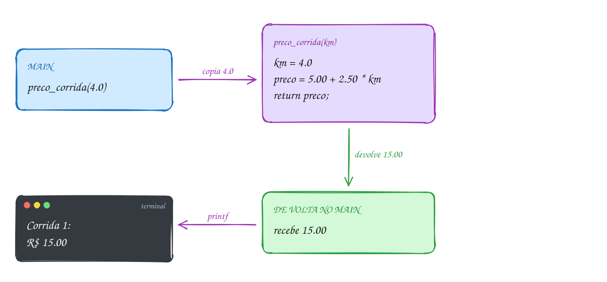
#include <stdio.h>
// protótipo: avisa o compilador que a função existe e como chamá-la
double preco_corrida(double km);
int main(void) {
printf("Corrida 1: R$ %.2f\n", preco_corrida(4.0));
printf("Corrida 2: R$ %.2f\n", preco_corrida(10.0));
printf("Corrida 3: R$ %.2f\n", preco_corrida(2.5));
return 0;
}
// definição: bandeirada de R$ 5.00 mais R$ 2.50 por km
double preco_corrida(double km) {
double preco = 5.00 + 2.50 * km;
return preco; // devolve o valor para quem chamou
}
// Saída:
// Corrida 1: R$ 15.00
// Corrida 2: R$ 30.00
// Corrida 3: R$ 11.25
A chamada é um desvio: sai do main, roda a função e volta ao mesmo ponto
com o valor, uma vez por corrida:
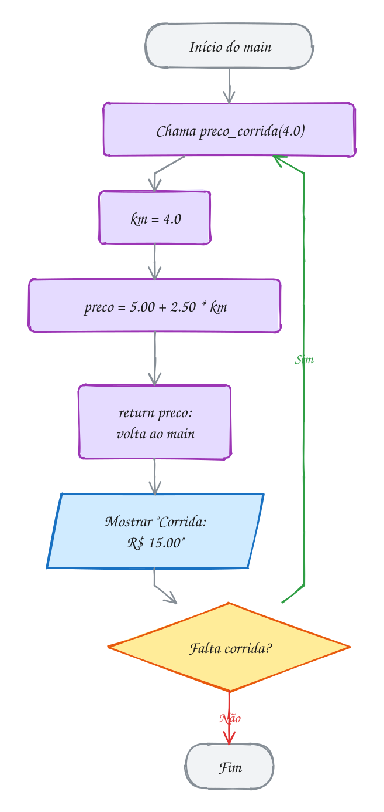
Exemplo A055 · A conta de luz: funções que chamam funções
#include <stdio.h>
int consumo(int leitura_anterior, int leitura_atual);
double tarifa(int kwh);
double valor_conta(int kwh);
int main(void) {
int janeiro = consumo(4210, 4390);
int fevereiro = consumo(4390, 4625);
printf("Janeiro: %d kWh, R$ %.2f\n", janeiro, valor_conta(janeiro));
printf("Fevereiro: %d kWh, R$ %.2f\n", fevereiro, valor_conta(fevereiro));
// a chamada de dentro roda primeiro e o resultado vira o argumento
printf("Março: R$ %.2f\n", valor_conta(consumo(4625, 4720)));
// o retorno serve até como condição de um if
if (valor_conta(fevereiro) > 150.00) {
printf("Fevereiro passou de R$ 150.00\n");
}
return 0;
}
int consumo(int leitura_anterior, int leitura_atual) {
return leitura_atual - leitura_anterior;
}
// quem gasta mais paga mais caro por kWh
double tarifa(int kwh) {
if (kwh <= 100) {
return 0.60;
}
return 0.80;
}
// valor_conta não sabe a tarifa: ela pergunta para outra função
double valor_conta(int kwh) {
double iluminacao_publica = 12.00;
return kwh * tarifa(kwh) + iluminacao_publica;
}
// Saída:
// Janeiro: 180 kWh, R$ 156.00
// Fevereiro: 235 kWh, R$ 200.00
// Março: R$ 69.00
// Fevereiro passou de R$ 150.00
gcc ~/LPEDC/material/A055.c -o ~/LPEDC/material/A055 && ~/LPEDC/material/A055
Exemplo A056 · Funções que só fazem e funções que respondem
#include <stdio.h>
void cabecalho(void);
double menor(double a, double b);
int main(void) {
double posto_a = 5.89;
double posto_b = 5.79;
double posto_c = 5.95;
cabecalho(); // void: só faz, não devolve nada
double mais_barato = menor(menor(posto_a, posto_b), posto_c);
printf("Mais barato: R$ %.2f\n", mais_barato);
printf("Encher 40 litros: R$ %.2f\n", 40 * mais_barato);
return 0;
}
void cabecalho(void) {
printf("=== Gasolina hoje ===\n");
}
double menor(double a, double b) {
if (a < b) {
return a; // o return encerra a função na hora
}
return b; // só chega aqui se a >= b
}
// Saída:
// === Gasolina hoje ===
// Mais barato: R$ 5.79
// Encher 40 litros: R$ 231.60
gcc ~/LPEDC/material/A056.c -o ~/LPEDC/material/A056 && ~/LPEDC/material/A056
Exercício E163 · ★☆☆
Você vai trocar o piso de dois cômodos e precisa da área de cada um. Escreva a função "double area_comodo(double largura, double comprimento)" e use-a no main para a sala (4.0 x 3.5) e o quarto (3.0 x 3.0). Mostre também a soma. O main não pode ter nenhuma multiplicação: a conta fica só na função.
Saída esperada:
Sala: 14.00 m2
Quarto: 9.00 m2
Total: 23.00 m2
Exercício E165 · ★★☆
Um ano é bissexto se for divisível por 4 e não por 100, ou se for divisível por 400. Escreva "bool eh_bissexto(int ano)" e use-a num laço para mostrar os anos bissextos de 2000 a 2030 e quantos são.
Saída esperada:
2000 2004 2008 2012 2016 2020 2024 2028
Bissextos: 8
Exercício E166 · ★★☆
O estacionamento do shopping cobra R$ 5.00 pelas primeiras 2 horas e mais R$ 2.00 por hora ou fração depois disso, com teto de R$ 20.00 por dia. Escreva "double tarifa(double horas)" e calcule o valor de três carros (1.5 h, 3.2 h e 12 h) e o total do dia.
Saída esperada:
Carro 1 (1.5 h): R$ 5.00
Carro 2 (3.2 h): R$ 9.00
Carro 3 (12.0 h): R$ 20.00
Total do dia: R$ 34.00
gcc ~/LPEDC/material/E166.c -o ~/LPEDC/material/E166 -lm && ~/LPEDC/material/E166
Exercício E167 · ★★★
A função ajusta, já pronta no arquivo, tem três return. Só o primeiro que for alcançado vale: os testes de baixo nem são feitos.
Escreva "int passos(int n)", que aplica ajusta em n repetidas vezes até n chegar a 1, mostrando cada valor no caminho, e devolve quantas vezes aplicou. No main, use passos para 7, 14 e 30 e mostre o total de cada um, e mostre também ajusta(dobro(7)), resolvida de dentro para fora.
Saída esperada:
7: 8 4 2 1 (4 passos)
14: 4 2 1 (3 passos)
30: 20 10 5 6 3 4 2 1 (8 passos)
ajusta(dobro(7)) = 4
O assunto 0028 mostrou que a chamada leva um argumento até o parâmetro. Falta
saber o que exatamente viaja. A função recebe a própria variável de quem
chamou ou outra coisa? A resposta decide se uma função consegue mudar as
variáveis do main, e explica por que tantas funções "não funcionam" na
primeira tentativa.
Pense num boleto. Você fotografa o boleto e manda no grupo da família. Sua tia
rabisca "pago!" na foto. O boleto de papel, na sua gaveta, continua igual: ela
mexeu numa cópia. Toda chamada de função em C segue essa regra. Em
reajustar(mensalidade, 10), o C calcula o valor de cada argumento e
copia esse valor para o parâmetro. Esse mecanismo é a passagem por
valor, e é a única forma de passagem que o C tem (DEITEL; DEITEL, 2011, cap.
5).
Os livros dão nomes às duas pontas da cópia (ROCHA; BORGES, s.d.). O
parâmetro escrito na definição, como o mensalidade de
double reajustar(double mensalidade, double percentual), é o parâmetro formal.
O valor que aparece na chamada é o argumento, também chamado de
parâmetro real. Na prova, "formal" aponta para a definição e "real" para a
chamada.
O parâmetro formal é uma variável nova, local da função: nasce no momento da chamada, já com a cópia dentro, e some quando a função termina (BACKES, 2013, cap. 9). A função pode mudá-lo à vontade. A variável de quem chamou fica intacta, mesmo que as duas tenham o mesmo nome. São duas caixinhas em lugares diferentes da memória, e o nome igual é coincidência.
Uma consequência ajuda a fixar a ideia: a função recebe só o número. As
chamadas reajustar(mensalidade, 10), reajustar(120.00, 10) e
reajustar(100 + 20, 5 * 2) são idênticas para ela, porque em todas chega
120.00 e chega 10. Ela não sabe de onde o valor veio, então não tem como
alterar a variável original.
Se a função não mexe nas variáveis de quem chama, o resultado volta pelo
return, e quem chama precisa guardá-lo: mensalidade = reajustar(...)
(KERNIGHAN; RITCHIE, 1989, cap. 4). Ignorar o retorno é permitido; você faz
isso o tempo todo com o printf, que devolve quantos caracteres escreveu. Mas
um cálculo cujo retorno ninguém guarda é perdido.
A cópia também converte o tipo quando preciso. Se o argumento não for do tipo
do parâmetro, o C o converte como faria numa atribuição (KERNIGHAN; RITCHIE,
1989, cap. 4). Passar 2.9 para um parâmetro int entrega 2: a parte
decimal some, e o -Wall não avisa. O protótipo é o que permite essa
conversão, porque é ele que diz ao compilador o tipo de cada parâmetro.
E a passagem por referência, que os livros de algoritmos citam? Nela a
função recebe a variável original e pode alterá-la. O C não tem esse
mecanismo, mas o simula: em vez do valor, você passa o endereço da
variável, e a função usa o endereço para chegar até ela (DEITEL; DEITEL, 2011,
cap. 5). O & do scanf faz exatamente isso. O assunto 0046 mostra como.
Por fim, uma função sem parâmetros. Escreva void linha(void): o void entre
parênteses diz "não aceito argumento nenhum", e linha(5) vira erro. Já
void linha(), com parênteses vazios, no C17 quer dizer "não vou conferir os
argumentos", e linha(5) compila calado (BACKES, 2013, cap. 9). Use sempre
(void).
[!WARNING] A função que "deveria" mudar a variável e não muda. Em
void trocar(int a, int b), a troca ocorre entre as cópias e nada muda nomain. Para a função mexer numa variável sua, passe o endereço dela (o&doscanf, assunto 0046).
A academia reajusta a mensalidade de R$ 120,00 em 10%. Há duas mensalidade
na memória, a do main e a cópia da função, e só a cópia vira 132.00:
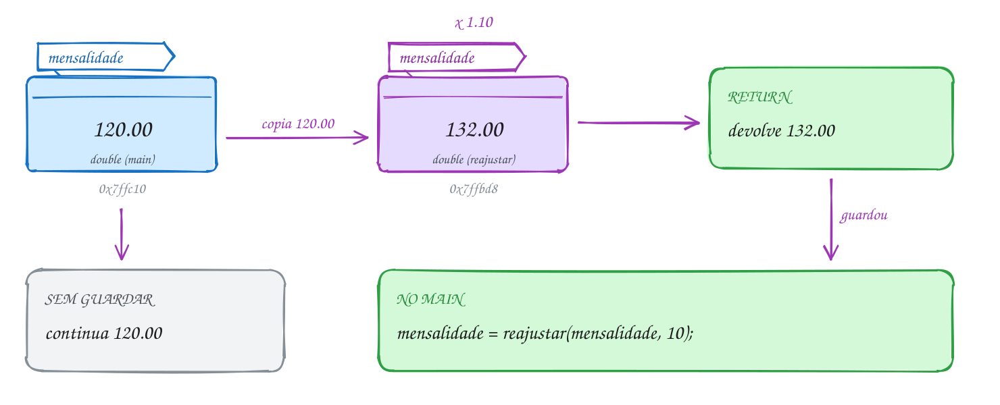
#include <stdio.h>
double reajustar(double mensalidade, double percentual);
int main(void) {
double mensalidade = 120.00;
printf("Antes: %.2f\n", mensalidade);
reajustar(mensalidade, 10); // o resultado é jogado fora
printf("Depois: %.2f\n", mensalidade); // continua 120.00
mensalidade = reajustar(mensalidade, 10); // agora guarda o retorno
printf("Guardando o retorno: %.2f\n", mensalidade);
return 0;
}
// mensalidade aqui é uma CÓPIA: outra variável, com o mesmo nome
double reajustar(double mensalidade, double percentual) {
mensalidade = mensalidade * (1 + percentual / 100);
printf("Dentro: %.2f\n", mensalidade);
return mensalidade;
}
// Saída:
// Antes: 120.00
// Dentro: 132.00
// Depois: 120.00
// Dentro: 132.00
// Guardando o retorno: 132.00
O valor sai por cópia e só volta pelo return; guardar ou não o retorno
decide se o main fica sabendo:
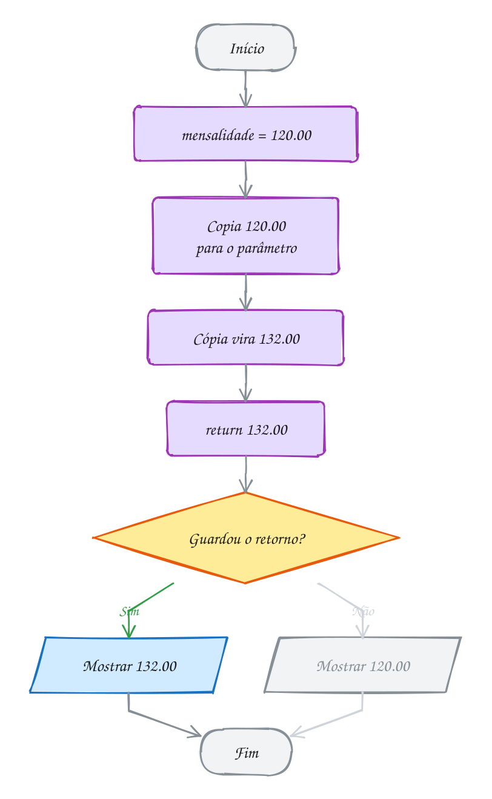
Exemplo A057 · O parâmetro casa pela posição, não pelo nome
#include <stdio.h>
double com_desconto(double preco, double percentual);
void contagem(int segundos);
int main(void) {
double preco = 80.00;
double percentual = 25;
// certo: o 1º argumento vai para o 1º parâmetro, o 2º para o 2º
printf("Certo: R$ %.2f\n", com_desconto(preco, percentual));
// trocado: os nomes iguais não ajudam, o C só olha a ordem
printf("Trocado: R$ %.2f\n", com_desconto(percentual, preco));
// literal e expressão também servem: a função recebe só o valor
printf("Literal: R$ %.2f\n", com_desconto(200, 10 + 5));
int tempo = 3;
contagem(tempo);
printf("No main, tempo continua %d\n", tempo);
return 0;
}
double com_desconto(double preco, double percentual) {
return preco - preco * percentual / 100;
}
// o parâmetro é uma variável de trabalho: pode diminuir até zero
void contagem(int segundos) {
while (segundos > 0) {
printf("%d... ", segundos);
segundos--;
}
printf("já!\n");
}
// Saída:
// Certo: R$ 60.00
// Trocado: R$ 5.00
// Literal: R$ 170.00
// 3... 2... 1... já!
// No main, tempo continua 3
gcc ~/LPEDC/material/A057.c -o ~/LPEDC/material/A057 && ~/LPEDC/material/A057
Exemplo A058 · void, conversão e expressões como argumento
#include <stdio.h>
void mostrar_parcelas(double total, int vezes);
void linha(void);
int main(void) {
double celular = 1800.00;
linha();
mostrar_parcelas(celular, 3); // os tipos batem
mostrar_parcelas(900, 2); // 900 (int) vira 900.0 (double)
mostrar_parcelas(celular * 0.9, 4); // a expressão é calculada antes
mostrar_parcelas(celular, 2.9); // 2.9 vira 2: a parte decimal some
linha();
// linha(5); // erro: linha foi declarada com (void), não aceita argumento
return 0;
}
void mostrar_parcelas(double total, int vezes) {
printf("%d x R$ %.2f\n", vezes, total / vezes);
}
void linha(void) {
printf("--------------------\n");
}
// Saída:
// --------------------
// 3 x R$ 600.00
// 2 x R$ 450.00
// 4 x R$ 405.00
// 2 x R$ 900.00
// --------------------
gcc ~/LPEDC/material/A058.c -o ~/LPEDC/material/A058 && ~/LPEDC/material/A058
Exercício E169 · ★☆☆
No app do cartão fidelidade, a promoção dobra os pontos. Escreva
"int dobrar_pontos(int pontos)", que dobra o próprio parâmetro, mostra
"dentro:
1. chame dobrar_pontos(pontos) SEM guardar o retorno e mostre "main: ...";
2. chame de novo, agora com pontos = dobrar_pontos(pontos), e mostre
"main: ..." outra vez.
Saída esperada:
dentro: 300
main: 150
dentro: 300
main: 300
Exercício E171 · ★★☆
Escreva as funções "int menor(int a, int b)" e "int maior(int a, int b)", que devolvem o valor (sem ponteiros). No main, com a = 9 e b = 6, mostre as duas notas em ordem crescente usando as duas funções no printf.
Saída esperada:
Em ordem: 6 e 9
Exercício E172 · ★★☆
Você aplica R$ 1000.00 num investimento que rende 1% ao mês. Escreva "double montante(double capital, double taxa, int meses)" que usa o próprio parâmetro capital como acumulador: a cada mês, capital = capital * (1 + taxa / 100). No main, mostre o montante depois de 12 e de 24 meses e prove que a variável do main não mudou.
Saída esperada:
12 meses: R$ 1126.83
24 meses: R$ 1269.73
No main, capital continua R$ 1000.00
Exercício E174 · ★★★
Um número é capicua (palíndromo) quando se lê igual de trás para frente: 1221, 343. Escreva:
int inverter(int n) devolve n com os dígitos invertidos (123 -> 321);
use o próprio n como variável de trabalho
bool eh_capicua(int n) usa inverter
No main, mostre inverter(12345), prove que a variável do main não mudou e conte as capicuas de 100 a 999.
Saída esperada:
inverter(12345) = 54321
No main, numero continua 12345
Capicuas de 100 a 999: 90
Com funções, o programa passa a ter muitas variáveis espalhadas, e duas
perguntas aparecem. Uma variável do main pode ser usada dentro de outra
função? E o valor de uma variável da função sobrevive de uma chamada para a
seguinte? As duas respostas dependem de onde e de como a variável foi
declarada.
No banco, o painel chama a senha 101, depois a 102, depois a 103: ele lembra onde parou. O atendente, ao contrário, começa a conversa do zero a cada cliente e não guarda nada do anterior. Um programa precisa das duas coisas, e o C tem uma ferramenta para cada. Para entender qual usar, separe duas propriedades que toda variável tem (DEITEL; DEITEL, 2011, cap. 5). O escopo diz onde no código o nome da variável pode ser usado. O tempo de vida, também chamado de duração, diz quando a variável existe na memória.
A variável local é declarada dentro de um bloco { } e só pode ser usada
nele (BACKES, 2013, cap. 9). Os parâmetros são locais da função, e o i de
for (int i = 0; ...) é local do laço. O tempo de vida acompanha o escopo: a
local nasce quando o programa entra no bloco e morre quando sai. Por isso ela
também se chama automática. É o atendente: a cada chamada, uma local
começa de novo. E começa com lixo, se você não der um valor inicial,
porque a memória que ela ocupa guarda o que sobrou de antes.
A variável global é declarada fora de qualquer função. Seu escopo vai do
ponto da declaração até o fim do arquivo, e ela vive enquanto o programa roda
(BACKES, 2013, cap. 9). Parece prático, porque todas as funções a enxergam.
O custo aparece quando algo dá errado: se o valor está estranho, qualquer
função pode ter mexido nele, e você precisa ler o programa inteiro para achar
o culpado. Prefira passar dados por parâmetro e devolver pelo return.
O painel do banco pede uma terceira combinação: uma variável que só a função
enxerga, mas que lembra o valor entre as chamadas. É a static local,
declarada dentro do bloco com a palavra static. Ela tem o escopo de uma
local e o tempo de vida de uma global (KERNIGHAN; RITCHIE, 1989, cap. 4). A
linha static int senha = 100; roda uma vez, antes de o programa
começar. Nas chamadas seguintes, a variável continua com o valor que tinha
quando a função terminou da última vez.
Globais e static têm outra diferença em relação às locais: sem valor
inicial, começam em 0. Elas ficam numa região fixa da memória, separada da
região das locais, e essa região é preparada quando o programa carrega. As
locais ficam na pilha, que é o assunto 0031.
Os escopos também podem se sobrepor. Se um bloco interno declara um nome que já existe fora, o de dentro esconde o de fora até o bloco acabar (DEITEL; DEITEL, 2011, cap. 5). Vale sempre a declaração mais próxima. O de fora não mudou; ele só fica fora de alcance por um trecho.
A palavra static tem ainda um segundo uso. Escrita numa global, fora de
qualquer função, ela não muda o tempo de vida, que já é o programa todo; ela
restringe o escopo ao arquivo .c em que a global está (KERNIGHAN; RITCHIE,
1989, cap. 4). O assunto 0034 usa isso para esconder dados de um módulo.
A tabela resume os três tipos de variável:
| Tipo | Onde declara | Escopo | Tempo de vida |
|---|---|---|---|
| local (automática) | dentro de { } |
só aquele bloco | nasce ao entrar no bloco, morre ao sair |
| global | fora de qualquer função | do ponto da declaração até o fim do arquivo | o programa todo |
static local |
dentro de { }, com static |
só aquele bloco | o programa todo |
[!WARNING]
static int senha = 100;não volta a valer 100 a cada chamada: a inicialização acontece uma vez. O oposto também engana: uma local sem inicialização começa com lixo, não com 0. E esconder nomes compila sem aviso com-Wall: só o-Wshadowreclama.
O painel do banco lembra a última senha; o atendente zera a conversa a cada
cliente. A função chamar tem a global atendidos, a static senha e a
local vezes. Depois de três chamadas:
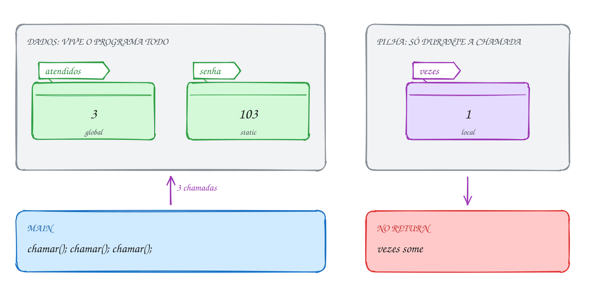
#include <stdio.h>
int atendidos = 0; // global: vive o programa todo, todo mundo enxerga
int chamar(void) {
static int senha = 100; // static: inicializada uma vez só, guarda o valor
int vezes = 0; // local: nasce de novo a cada chamada
senha++;
vezes++;
atendidos++;
printf("Senha %d | vezes: %d | atendidos: %d\n", senha, vezes, atendidos);
return senha;
}
int main(void) {
chamar();
chamar();
int ultima = chamar();
printf("Última senha chamada: %d\n", ultima);
return 0;
}
// Saída:
// Senha 101 | vezes: 1 | atendidos: 1
// Senha 102 | vezes: 1 | atendidos: 2
// Senha 103 | vezes: 1 | atendidos: 3
// Última senha chamada: 103
A local nasce de novo com 0 a cada chamada; a static já espera com o valor
anterior:
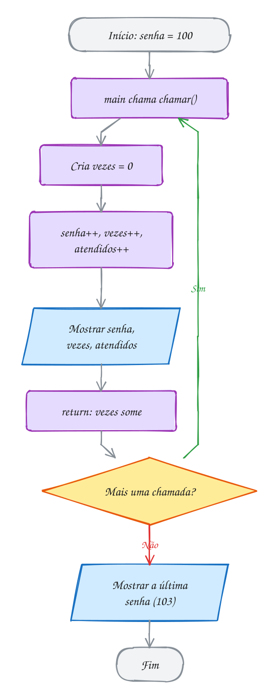
Exemplo A059 · A função que lembra o recorde
#include <stdbool.h>
#include <stdio.h>
// devolve true quando a temperatura bate o recorde do dia
bool novo_recorde(int temperatura) {
static bool primeira = true; // true só até a primeira chamada
static int recorde = 0; // o maior valor visto até agora
if (primeira || temperatura > recorde) {
primeira = false;
recorde = temperatura;
return true;
}
return false;
}
void leitura(int hora, int temperatura) {
printf("%2dh: %d °C", hora, temperatura);
if (novo_recorde(temperatura)) {
printf(" (recorde!)");
}
printf("\n");
}
int main(void) {
leitura(6, 19); // a primeira leitura é sempre recorde
leitura(9, 24);
leitura(12, 22); // 22 < 24: a static lembra do 24
leitura(15, 30);
leitura(18, 27);
// printf("%d\n", recorde); // erro: recorde só existe dentro da função
return 0;
}
// Saída:
// 6h: 19 °C (recorde!)
// 9h: 24 °C (recorde!)
// 12h: 22 °C
// 15h: 30 °C (recorde!)
// 18h: 27 °C
gcc ~/LPEDC/material/A059.c -o ~/LPEDC/material/A059 && ~/LPEDC/material/A059
Exemplo A060 · Três variáveis com o mesmo nome
#include <stdio.h>
int nivel = 1; // global
void mostrar_global(void) {
printf("na função: %d\n", nivel); // aqui só existe a global
}
int main(void) {
printf("antes: %d\n", nivel); // ainda não há local: vê a global
int nivel = 2; // esconde a global daqui para baixo
printf("main: %d\n", nivel);
{
int nivel = 3; // esconde a do main, só dentro deste bloco
printf("bloco: %d\n", nivel);
}
printf("main de novo: %d\n", nivel);
mostrar_global();
for (int i = 0; i < 2; i++) {
int dobro = i * 2; // i e dobro só existem dentro do for
printf("i = %d, dobro = %d\n", i, dobro);
}
// printf("%d\n", i); // erro: 'i' undeclared
return 0;
}
// Saída:
// antes: 1
// main: 2
// bloco: 3
// main de novo: 2
// na função: 1
// i = 0, dobro = 0
// i = 1, dobro = 2
gcc ~/LPEDC/material/A060.c -o ~/LPEDC/material/A060 && ~/LPEDC/material/A060
Exercício E175 · ★☆☆
O cartão fidelidade da farmácia tem 100 pontos guardados (uma global) e a compra de hoje vale 30 pontos (uma local do main com o MESMO nome). Escreva:
int pontos = 100; global: o saldo do cartão
void extrato(void) mostra "extrato: <pontos>"
void somar_na_global(int valor) soma valor nos pontos do cartão
No main, chame extrato, declare "int pontos = 30;", mostre "compra de hoje", chame somar_na_global(pontos), chame extrato de novo e mostre a compra de hoje outra vez.
Saída esperada:
extrato: 100
compra de hoje: 30
extrato: 130
compra de hoje: 30
Exercício E177 · ★★☆
Escreva "double preco_item(int i)", que devolve o preço do item i da compra (1: 12.50, 2: 8.00, 3: 30.00, 4: 4.75). No main, use um for de 1 a 4 para somar os quatro itens numa variável total e mostre o total depois do laço.
Saída esperada:
Total: R$ 55.25
Exercício E178 · ★★☆
O vale-refeição começa com R$ 300.00, guardados numa variável LOCAL do main (nada de global). Escreva "double gastar(double saldo, double valor)", que recebe o saldo e devolve o saldo novo, já descontada uma taxa de R$ 1.00 por gasto. O main guarda o retorno na própria variável: gasta R$ 45.00 e R$ 32.50 e mostra o saldo; depois gasta R$ 18.00 e mostra o saldo de novo.
Saída esperada:
Saldo: R$ 220.50
Saldo: R$ 201.50
Exercício E179 · ★★★
Quatro variáveis chamadas x, cada uma com escopo e tempo de vida diferentes. Escreva o programa a partir destas regras:
int x = 10; global
void a(void) tem uma local x = 1; mostra "a: <x>", soma 1, mostra " -> <x>"
int b(void) tem uma static x = 5; mostra "b: <x>", soma 5, mostra
" -> <x>" e devolve o x novo
void c(void) não declara x: mostra "c: <x>", dobra, mostra " -> <x>"
O main tem a própria local x = 20 e mostra "main: 20"; abre um bloco com
outra x = 30 e mostra "bloco: 30"; chama a, b e c duas vezes, nessa ordem,
somando numa local os dois retornos de b; mostra "main:
Saída esperada:
main: 20
bloco: 30
a: 1 -> 2
b: 5 -> 10
c: 10 -> 20
a: 1 -> 2
b: 10 -> 15
c: 20 -> 40
main: 20
soma dos b: 25
O assunto 0030 deixou duas perguntas no ar. Por que uma variável local some quando a função termina? E por que cada chamada começa com locais novas? A resposta está no jeito como o programa organiza a memória das chamadas em andamento. Entender esse mecanismo também ajuda a ler as mensagens de erro e prepara o terreno para a recursão, no assunto 0032.
Quando um programa em C quebra dentro do gdb, o depurador do GNU, o comando
bt mostra algo assim:
#0 calcular_taxa (valor=0) at pedido.c:12
#1 fechar_pedido () at pedido.c:30
#2 main () at pedido.c:5
Esse relatório é um stack trace, ou backtrace (GDB, s.d.). Ele mostra a
pilha de chamadas: a lista das funções que estão em andamento naquele
instante (CELES; CERQUEIRA; RANGEL, 2016). Leia de baixo para cima. O main
chamou fechar_pedido, que chamou calcular_taxa, e o erro aconteceu nesta
última, na linha 12. Só a de cima estava rodando; as de baixo esperavam um
retorno.
A cada chamada, o programa reserva um pedaço de memória só para ela, o quadro, também chamado de stack frame ou registro de ativação (BACKES, 2013, cap. 9). O quadro guarda três coisas. Os parâmetros, com as cópias dos argumentos (assunto 0029). As variáveis locais da função. E o endereço de retorno: o ponto exato, dentro de quem chamou, em que o programa deve continuar quando a função acabar. Sem esse endereço, o programa não saberia para onde voltar.
Os quadros se empilham como pratos na pia. Chamou uma função, um quadro novo vai para o topo. A função retornou, o quadro do topo sai, e o de baixo continua do ponto em que parou. A última função a começar é sempre a primeira a terminar. Essa regra tem nome: último a entrar, primeiro a sair, ou LIFO (last in, first out) (DEITEL; DEITEL, 2011, cap. 5). A mesma regra volta no módulo de estruturas de dados, quando você mesmo construir uma pilha.
Agora as perguntas do começo têm resposta. A local "some" no return porque
o quadro dela foi desempilhado. Cada chamada começa com locais novas porque
ganha um quadro novo. E uma função não enxerga as variáveis de quem a chamou
porque elas estão noutro quadro, mais embaixo, fora do seu escopo (CELES;
CERQUEIRA; RANGEL, 2016).
A pilha tem tamanho fixo. No Linux, o padrão é 8 MB por programa, e o comando
ulimit -s mostra o valor (BACKES, 2013, cap. 9). Dá para empilhar centenas
de milhares de chamadas pequenas, mas não infinitas. Se o programa passa do
limite, o sistema o encerra: é o stack overflow, o estouro da pilha, que
no Linux aparece como Segmentation fault. O caso mais comum é uma recursão
que nunca para, e o assunto 0032 mostra como evitar.
[!WARNING] Local sem inicializar não "começa limpa". O quadro novo ocupa a memória que um quadro antigo acabou de liberar, e ninguém a apaga: uma
int soma;pode nascer com o valor que outra função deixou ali. O-Wallavisamay be used uninitialized.
Num pedido de R$ 50,00, o main chama total_com_entrega, que chama
taxa_entrega. No fundo há três quadros; quando taxa_entrega devolve 7.90,
seu quadro sai:
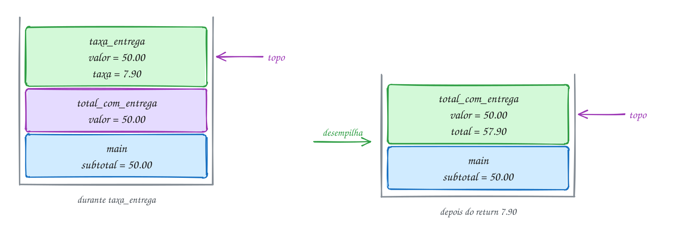
#include <stdio.h>
double taxa_entrega(double valor) {
printf(" entra taxa_entrega(%.2f)\n", valor);
double taxa = valor < 80.00 ? 7.90 : 0.00;
printf(" sai taxa_entrega -> %.2f\n", taxa);
return taxa;
}
double total_com_entrega(double valor) {
printf(" entra total_com_entrega(%.2f)\n", valor);
double total = valor + taxa_entrega(valor);
printf(" sai total_com_entrega -> %.2f\n", total);
return total;
}
int main(void) {
double subtotal = 50.00;
printf("entra main\n");
double total = total_com_entrega(subtotal);
printf("Total: R$ %.2f\n", total);
return 0;
}
// Saída:
// entra main
// entra total_com_entrega(50.00)
// entra taxa_entrega(50.00)
// sai taxa_entrega -> 7.90
// sai total_com_entrega -> 57.90
// Total: R$ 57.90
As chamadas empilham na descida e os retornos desempilham na ordem contrária; a decisão da taxa ocorre no topo:
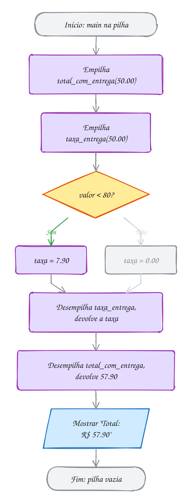
A pilha em cada momento, de baixo para cima (o topo é o último):
| Momento | Pilha (base → topo) | Quem roda |
|---|---|---|
| início | main (subtotal = 50.00) |
main |
chamou total_com_entrega(50.00) |
main → total_com_entrega (valor = 50.00) |
total_com_entrega |
chamou taxa_entrega(50.00) |
main → total_com_entrega → taxa_entrega (valor = 50.00, taxa = 7.90) |
taxa_entrega |
taxa_entrega devolveu 7.90 |
main → total_com_entrega (total = 57.90) |
total_com_entrega |
total_com_entrega devolveu 57.90 |
main (total = 57.90) |
main |
Há dois valor e dois total, um em cada quadro.
Exemplo A061 · O valor que desce a pilha, quadro por quadro
#include <stdio.h>
// topo da pilha: não chama ninguém, só devolve
double tarifa_base(void) {
double valor = 5.00;
printf(" tarifa_base devolve %.2f\n", valor);
return valor;
}
double com_integracao(void) {
double valor = 1.50; // outro "valor": cada quadro tem o seu
printf(" com_integracao espera (o seu valor é %.2f)\n", valor);
valor = valor + tarifa_base();
printf(" com_integracao devolve %.2f\n", valor);
return valor;
}
double meia_passagem(void) {
double valor = 0.50;
printf(" meia_passagem espera (o seu valor é %.2f)\n", valor);
valor = com_integracao() * valor;
printf(" meia_passagem devolve %.2f\n", valor);
return valor;
}
int main(void) {
double valor = 0; // o do main fica parado esperando lá embaixo
printf("main espera\n");
valor = meia_passagem();
printf("main recebe %.2f\n", valor);
return 0;
}
// Saída:
// main espera
// meia_passagem espera (o seu valor é 0.50)
// com_integracao espera (o seu valor é 1.50)
// tarifa_base devolve 5.00
// com_integracao devolve 6.50
// meia_passagem devolve 3.25
// main recebe 3.25
gcc ~/LPEDC/material/A061.c -o ~/LPEDC/material/A061 && ~/LPEDC/material/A061
Exemplo A062 · A mesma função volta para lugares diferentes
#include <stdio.h>
void recuo(int nivel) {
for (int i = 0; i < nivel; i++) {
printf(" ");
}
}
void validar_cartao(int nivel) {
recuo(nivel);
printf("validar_cartao (topo da pilha)\n");
}
void pagar(int nivel) {
recuo(nivel);
printf("entra pagar\n");
validar_cartao(nivel + 1); // volta para cá...
recuo(nivel);
printf("sai pagar\n");
}
void cadastrar(int nivel) {
recuo(nivel);
printf("entra cadastrar\n");
validar_cartao(nivel + 1); // ...e, desta vez, para cá
recuo(nivel);
printf("sai cadastrar\n");
}
int main(void) {
printf("main\n");
cadastrar(1);
pagar(1);
printf("main termina\n");
return 0;
}
// Saída:
// main
// entra cadastrar
// validar_cartao (topo da pilha)
// sai cadastrar
// entra pagar
// validar_cartao (topo da pilha)
// sai pagar
// main termina
gcc ~/LPEDC/material/A062.c -o ~/LPEDC/material/A062 && ~/LPEDC/material/A062
Exercício E181 · ★☆☆
Faça o programa do IMC mostrar a pilha enquanto roda. Escreva:
double quadrado(double x) devolve x * x
double imc(double peso, double altura) devolve peso / quadrado(altura)
Cada função mostra uma linha ao entrar (com os parâmetros) e outra ao sair (com o valor que devolve), recuada 2 espaços a mais que a de quem a chamou. O main calcula imc(72.0, 1.80), guarda numa local e mostra o resultado.
Saída esperada:
main chama imc
entra imc(peso = 72.0, altura = 1.80)
entra quadrado(x = 1.80)
sai quadrado -> 3.24
sai imc -> 22.2
IMC: 22.2
Exercício E183 · ★★☆
Monte o rastro de uma compra online. Escreva quatro funções que se chamam em cadeia: finalizar_compra chama pagar, que chama antifraude, que chama consultar_banco. Cada uma recebe o nível (int nivel) e passa nivel + 1 para a próxima. Use uma função "void recuo(int nivel)", que mostra 2 espaços por nível, para a saída ficar assim:
Saída esperada:
entra finalizar_compra
entra pagar
entra antifraude
consultar_banco: aprovado
sai antifraude
sai pagar
sai finalizar_compra
Exercício E184 · ★★☆
Cada quadro da pilha tem as suas variáveis, mesmo com nomes iguais. Escreva:
int dobro_mais_um(int n) r = n * 2; n = r + 1; devolve n
int processa(int n) r = dobro_mais_um(n); devolve r + n
main n = 5; r = processa(n)
Cada função mostra n e r como na saída (dobro_mais_um na entrada e na saída; processa antes e depois de devolver; main no fim).
Saída esperada:
dobro_mais_um entra: n = 5
dobro_mais_um sai: n = 11, r = 10
processa: n = 5, r = 11
processa devolve 16
main: n = 5, r = 16
Exercício E186 · ★★★
Meça a altura da pilha. Use duas globais, "altura" e "maior_altura". Toda função, ao entrar, chama entrar() (que soma 1 em altura e atualiza maior_altura) e, antes de sair, chama sair() (que diminui 1). O main também conta: ele chama entrar() no começo.
Monte estas chamadas: main chama checkout e frete; checkout chama cupom e pagamento; pagamento chama antifraude; frete não chama ninguém. No fim, o main mostra a maior altura e a altura atual (antes do sair dele).
Saída esperada:
Maior altura: 4
Altura agora: 1
Cinco amigos vão ao cinema e querem saber de quantos jeitos podem sentar nas cinco cadeiras. O primeiro tem 5 escolhas. Depois que ele senta, o problema fica igual, mas menor: de quantos jeitos 4 pessoas sentam em 4 cadeiras? O segundo tem 4 escolhas, e o problema encolhe de novo, até sobrar 1 pessoa com 1 jeito. A resposta é 5 × 4 × 3 × 2 × 1 = 120, o fatorial de 5, escrito 5!.
Repare no raciocínio: "para resolver o de 5, resolvo o de 4 e multiplico por 5". Você descreveu o problema usando ele mesmo, em tamanho menor. Uma função que faz isso, que resolve um problema chamando a si mesma com uma versão menor dele, é uma função recursiva (DEITEL; DEITEL, 2011, cap. 5). Pense numa boneca russa: para chegar à menor, você abre uma boneca e encontra outra igual, só que menor, e repete até a última, que não abre.
Toda função recursiva tem duas partes (FEOFILOFF, 2009, cap. 5). O caso
base é o problema pequeno o bastante para responder direto, sem nova
chamada: com 1 pessoa, há 1 jeito. É a boneca que não abre. O caso
recursivo reduz o problema a um menor e usa a resposta dele: para n
pessoas, a resposta é n * fatorial(n - 1). Em C, as duas partes cabem num
if: se n <= 1, devolva 1; senão, devolva n * fatorial(n - 1).
Uma regra não pode falhar: cada chamada tem de chegar mais perto do caso
base (FEOFILOFF, 2009, cap. 5). No fatorial, o n diminui 1 a cada chamada e
acaba chegando a 1. Se o problema não encolhe, ou encolhe sem nunca acertar o
caso base, a função chama a si mesma para sempre.
Na hora de escrever, confie na função (FEOFILOFF, 2009, cap. 5). Não
tente seguir todas as chamadas de cabeça, porque elas se aninham fundo
demais. Suponha que fatorial(n - 1) já funciona e pergunte: com essa
resposta na mão, como monto a de n? Depois confira o caso base em separado.
Se os dois estão certos, a função está certa para qualquer n. É o mesmo
raciocínio da indução matemática.
Por dentro, nada de especial acontece: cada chamada recursiva é uma chamada
comum e ganha seu próprio quadro na pilha do assunto 0031 (BACKES, 2013,
cap. 9). Na ida, fatorial(5) chama fatorial(4), que chama fatorial(3), e
a pilha cresce até fatorial(1). Nesse ponto há cinco quadros de fatorial
ao mesmo tempo, cada um com o seu n, todos parados menos o do topo. Na
volta, o caso base devolve 1, e cada quadro recebe a resposta de cima,
multiplica pelo seu n e devolve ao de baixo: 1, 2, 6, 24, 120.
Recursão e laço resolvem os mesmos problemas: todo cálculo recursivo pode ser
reescrito com repetição, e vice-versa (TENENBAUM; LANGSAM; AUGENSTEIN, 1995,
cap. 3). A diferença está no custo e na clareza. A recursão gasta memória
proporcional à profundidade: fatorial(5) ocupa 5 quadros de uma vez,
enquanto um laço usaria um só. Ela compensa quando o problema já é recursivo
por natureza, como percorrer uma árvore ou dividir um vetor ao meio, porque aí
a versão com laço fica bem mais difícil de ler.
O tipo também impõe limite. O fatorial cresce muito depressa: 12! =
479.001.600 cabe num int de 32 bits, mas 13! = 6.227.020.800 passa do
máximo de 2.147.483.647 e estoura.
[!WARNING] Caso base que nunca chega. Com
if (n == 1)no lugar deif (n <= 1),fatorial(0)chamafatorial(-1),fatorial(-2)... e não para. Cada chamada empilha um quadro, a pilha acaba e o programa morre com stack overflow (Segmentation fault).
De quantos jeitos 5 amigos sentam em 5 cadeiras? 5 × 4 × 3 × 2 × 1 = 120. Na
ida a pilha cresce até fatorial(1); na volta cada quadro multiplica e
devolve: 1, 2, 6, 24, 120:
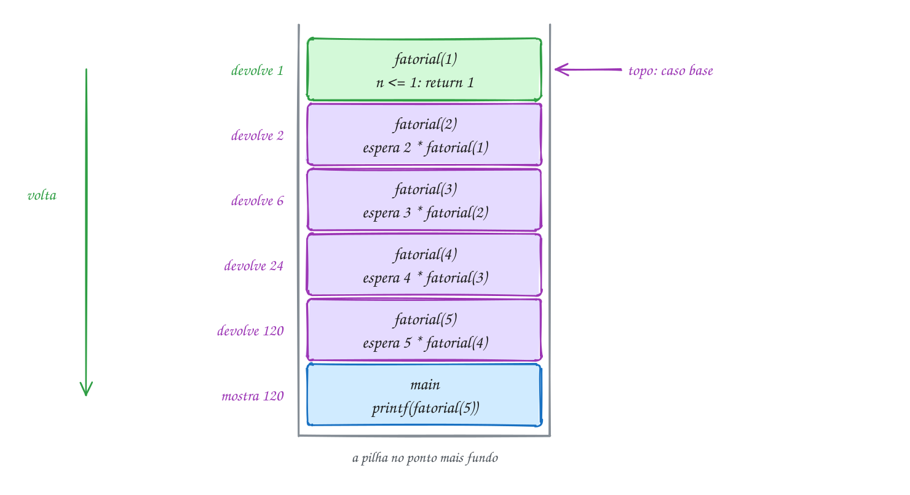
#include <stdio.h>
int fatorial(int n) {
if (n <= 1) {
return 1; // caso base: resolve direto, sem chamar ninguém
}
return n * fatorial(n - 1); // caso recursivo: um problema menor
}
int main(void) {
printf("5 amigos: %d jeitos\n", fatorial(5));
printf("12 amigos: %d jeitos\n", fatorial(12)); // o maior que cabe num int
return 0;
}
// Saída:
// 5 amigos: 120 jeitos
// 12 amigos: 479001600 jeitos
Não há laço no código, mas o fluxograma tem duas voltas: a ida (empilha com
n - 1) e a volta (cada quadro multiplica e sai):
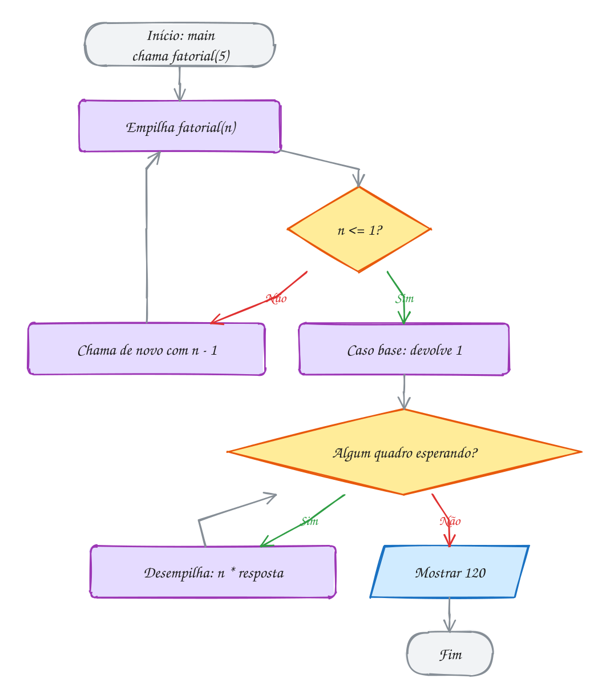
O teste de mesa de fatorial(5). As chamadas descem; os retornos sobem:
| Chamada | n | n <= 1? |
Espera | Devolve |
|---|---|---|---|---|
fatorial(5) |
5 | Não | 5 * fatorial(4) |
5 × 24 = 120 |
fatorial(4) |
4 | Não | 4 * fatorial(3) |
4 × 6 = 24 |
fatorial(3) |
3 | Não | 3 * fatorial(2) |
3 × 2 = 6 |
fatorial(2) |
2 | Não | 2 * fatorial(1) |
2 × 1 = 2 |
fatorial(1) |
1 | Sim | nada | 1 |
Exemplo A063 · Em quantos meses a dívida dobra
#include <stdio.h>
// o caso base não é um contador chegando a zero: é uma condição
int meses_para_chegar(double divida, double meta, double juros) {
if (divida >= meta) {
return 0; // caso base: já chegou, não falta nenhum mês
}
// um mês de juros e o mesmo problema, um pouco mais perto da meta
return 1 + meses_para_chegar(divida * (1 + juros / 100), meta, juros);
}
int main(void) {
printf("Cartão (12%% ao mês): %d meses\n", meses_para_chegar(1000, 2000, 12));
printf("Empréstimo (3%% ao mês): %d meses\n", meses_para_chegar(1000, 2000, 3));
// caso de borda: a meta já foi batida, nenhuma chamada recursiva
printf("Já dobrou: %d meses\n", meses_para_chegar(2500, 2000, 3));
return 0;
}
// Saída:
// Cartão (12% ao mês): 7 meses
// Empréstimo (3% ao mês): 24 meses
// Já dobrou: 0 meses
gcc ~/LPEDC/material/A063.c -o ~/LPEDC/material/A063 && ~/LPEDC/material/A063
Exemplo A064 · Imprimir antes ou depois da chamada
#include <stdio.h>
// imprime e depois chama: os números saem na ida
void regressiva(int n) {
if (n == 0) {
printf("Feliz Ano Novo!\n");
return;
}
printf("%d... ", n);
regressiva(n - 1);
}
// chama e depois imprime: os números saem na volta
void crescente(int n) {
if (n == 0) {
return;
}
crescente(n - 1);
printf("%d ", n);
}
int main(void) {
regressiva(5);
crescente(5);
printf("\n");
return 0;
}
// Saída:
// 5... 4... 3... 2... 1... Feliz Ano Novo!
// 1 2 3 4 5
gcc ~/LPEDC/material/A064.c -o ~/LPEDC/material/A064 && ~/LPEDC/material/A064
Exercício E187 · ★☆☆
Num torneio de vôlei de praia, cada dupla que chega cumprimenta todas as que já estão lá. Com 12 duplas, são 0 + 1 + 2 + ... + 11 cumprimentos. Escreva "int soma_ate(int n)", recursiva, que devolve 1 + 2 + ... + n, sem nenhum laço, e use-a para responder.
Saída esperada:
soma_ate(4) = 10
soma_ate(100) = 5050
Cumprimentos com 12 duplas: 66
Exercício E189 · ★★☆
Escreva "void eco(int n, int nivel)", recursiva, que mostra "ida n" antes da chamada recursiva, "fundo" no caso base (n == 0) e "volta n" depois da chamada. Cada linha é recuada 2 espaços por nível: o main chama eco(3, 0), e cada chamada recursiva passa nivel + 1. Use uma função "void recuo(int nivel)" para os espaços.
Saída esperada:
ida 3
ida 2
ida 1
fundo
volta 1
volta 2
volta 3
Exercício E190 · ★★☆
Escreva "void binario(int n)", recursiva, que mostra n em binário. A conta de dividir por 2 dá os bits de trás para frente (o último resto é o primeiro bit); a recursão resolve isso de graça se você imprimir na volta.
Saída esperada:
13 = 1101
255 = 11111111
2026 = 11111101010
Exercício E192 · ★★★
A calculadora velha da loja só sabe somar e subtrair. Escreva "int multiplicar(int a, int b)", recursiva, que só usa + e - (nada de *), e que funciona com b positivo, zero e NEGATIVO.
Saída esperada:
7 x 4 = 28
7 x -3 = -21
-5 x 6 = -30
9 x 0 = 0
O fatorial do assunto 0032 faz uma chamada recursiva por vez, e o custo é fácil de prever. Muitos problemas pedem mais de uma chamada, e aí a recursão pode sair muito barata ou muito cara, dependendo do caso. Três clássicos da prova mostram os dois lados: Fibonacci, que desperdiça trabalho; a Torre de Hanói, que não desperdiça nada; e o MDC de Euclides, que encolhe depressa.
Comece pela escada do prédio. Ela tem 4 degraus, e você sobe de 1 em 1 ou pulando 2. De quantos jeitos dá para subir? Pense no último passo: você chegou ao degrau 4 vindo do 3, com um passo, ou vindo do 2, com um pulo. Então os jeitos de chegar ao 4 são os jeitos de chegar ao 3 mais os de chegar ao 2. Cada resposta é a soma das duas anteriores: 1, 2, 3, 5. São 5 jeitos.
Essa conta gera a sequência de Fibonacci: 0, 1, 1, 2, 3, 5, 8, 13, 21...
Cada termo é a soma dos dois anteriores, e os dois primeiros são dados. A
definição já nasce recursiva (BACKES, 2013, cap. 9). Há dois casos base,
fib(0) = 0 e fib(1) = 1, e um caso recursivo com duas chamadas:
fib(n) = fib(n - 1) + fib(n - 2). A escada de 4 degraus é fib(5) = 5.
O código tem três linhas e funciona, mas custa caro. Para ver por quê,
desenhe a árvore de chamadas: um nó para cada chamada, ligado aos nós das
chamadas que ele faz (DEITEL; DEITEL, 2011, cap. 5). Cada fib gera mais
duas, e essas duas não se comunicam. Para calcular fib(5), a árvore calcula
fib(3) duas vezes e fib(2) três vezes, sempre do zero. O total chega a 15
nós. A cada n a mais, o número de chamadas quase dobra, e o crescimento é
exponencial: fib(30) já faz perto de 2,7 milhões de chamadas.
A árvore ajuda a separar duas medidas (FEOFILOFF, 2009, cap. 5). O tempo
de fib(n) acompanha o número de nós, que cresce como 1,618ⁿ. A memória
acompanha a altura da árvore, que é no máximo n. O programa desce um galho
de cada vez; quando um galho termina, seus quadros saem da pilha e o espaço
serve ao galho seguinte. Por isso fib(40) demora, mas não estoura a pilha.
Um laço com duas variáveis, anterior e atual, faz a mesma conta em n
passos. Quando as chamadas repetem trabalho, desconfie da recursão.
A Torre de Hanói mostra o outro lado. São três estacas, A, B e C, e
discos de tamanhos diferentes empilhados em A, o maior embaixo. O objetivo é
levar todos para C, movendo um disco por vez, sem nunca pôr um disco maior
sobre um menor. Pensando recursivamente, a solução tem três passos
(DEITEL; DEITEL, 2011, cap. 5). Mova os n - 1 discos de cima de A para B,
usando C de apoio. Mova o disco maior de A para C. Mova os n - 1 discos de
B para C, usando A de apoio. O primeiro e o terceiro passos são o mesmo
problema com um disco a menos e com as estacas trocadas de papel; por isso a
função recebe as três estacas como parâmetro.
Com n discos, a solução faz 2ⁿ - 1 movimentos, e não existe jeito mais
curto. As duas chamadas de Hanói resolvem pedaços diferentes do problema, sem
repetir nada, e a recursão aqui não desperdiça trabalho. O custo continua
exponencial, mas porque o próprio problema exige tantos movimentos.
O terceiro clássico é o máximo divisor comum (MDC), com uma recursão de
mais de 2.000 anos, atribuída a Euclides: o MDC de a e b é o MDC de b e
a % b, e, quando o segundo número chega a 0, o primeiro é a resposta
(DEITEL; DEITEL, 2011, cap. 5). Em mdc(1071, 462), as chamadas passam por
mdc(462, 147), mdc(147, 21) e mdc(21, 0), que devolve 21. Há uma
chamada por vez, como no fatorial, e o resto encolhe tão depressa que poucos
passos bastam até para números enormes.
[!WARNING] Fibonacci recursivo serve para aprender recursão e custo, não para calcular. E
fib(47)= 2.971.215.073 não cabe numintde 32 bits, que vai até 2.147.483.647. Comlong long, a conta vai atéfib(92).
Uma escada de 4 degraus, subindo de 1 em 1 ou pulando 2, tem fib(5) = 5
jeitos. A árvore de fib(5) tem 15 nós, e os dois amarelos são fib(3)
calculado duas vezes:
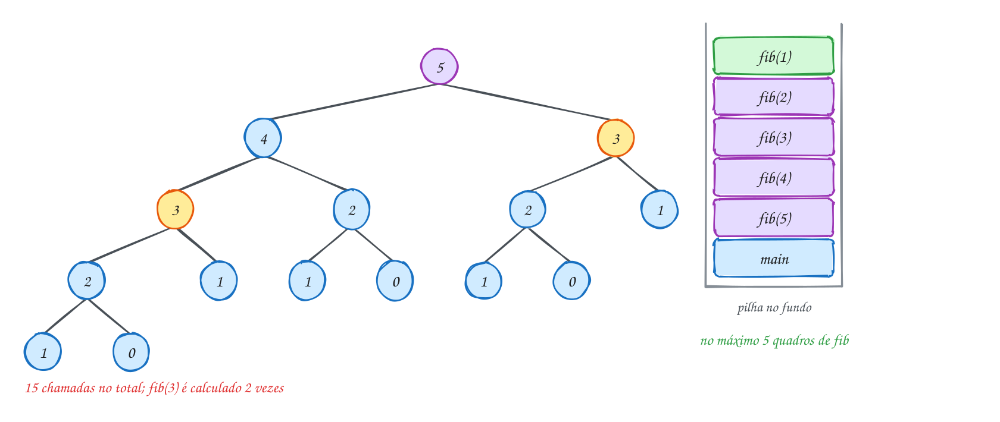
#include <stdio.h>
long chamadas = 0; // conta quantas vezes fib foi chamada
int fib(int n) {
chamadas++;
if (n < 2) {
return n; // fib(0) = 0 e fib(1) = 1
}
return fib(n - 1) + fib(n - 2); // duas chamadas por vez
}
int main(void) {
for (int n = 5; n <= 30; n += 5) {
chamadas = 0;
int resultado = fib(n);
printf("fib(%d) = %d, com %ld chamadas\n", n, resultado, chamadas);
}
return 0;
}
// Saída:
// fib(5) = 5, com 15 chamadas
// fib(10) = 55, com 177 chamadas
// fib(15) = 610, com 1973 chamadas
// fib(20) = 6765, com 21891 chamadas
// fib(25) = 75025, com 242785 chamadas
// fib(30) = 832040, com 2692537 chamadas
Quase 2,7 milhões de chamadas para fib(30), contra 30 passos de um laço. No
fluxograma, a segunda chamada só começa quando a primeira volta:
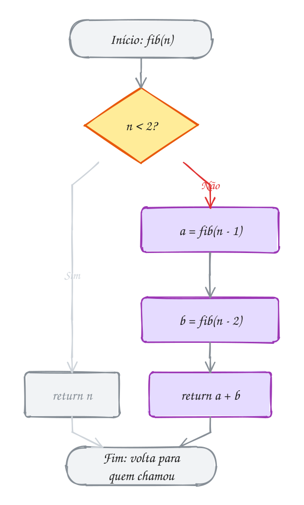
O MDC de Euclides em C é return b == 0 ? a : mdc(b, a % b);. O teste de
mesa de mdc(1071, 462):
| Chamada | a | b | a % b |
|---|---|---|---|
mdc(1071, 462) |
1071 | 462 | 147 |
mdc(462, 147) |
462 | 147 | 21 |
mdc(147, 21) |
147 | 21 | 0 |
mdc(21, 0) |
21 | 0 | caso base: devolve 21 |
Exemplo A065 · Fibonacci sem recalcular: a recursão que carrega o par
#include <stdio.h>
long chamadas = 0;
// a e b são dois vizinhos da sequência; a cada chamada o par anda uma casa
long long fib_par(int n, long long a, long long b) {
chamadas++;
if (n == 0) {
return a; // caso base: andou tudo, a é a resposta
}
return fib_par(n - 1, b, a + b); // UMA chamada só, não duas
}
long long fib(int n) {
return fib_par(n, 0, 1); // começa no par (fib(0), fib(1))
}
int main(void) {
for (int n = 10; n <= 30; n += 10) {
chamadas = 0;
long long resultado = fib(n);
printf("fib(%d) = %lld, com %ld chamadas\n", n, resultado, chamadas);
}
chamadas = 0;
long long grande = fib(90); // com duas chamadas por vez, não terminaria hoje
printf("fib(90) = %lld, com %ld chamadas\n", grande, chamadas);
return 0;
}
// Saída:
// fib(10) = 55, com 11 chamadas
// fib(20) = 6765, com 21 chamadas
// fib(30) = 832040, com 31 chamadas
// fib(90) = 2880067194370816120, com 91 chamadas
gcc ~/LPEDC/material/A065.c -o ~/LPEDC/material/A065 && ~/LPEDC/material/A065
Exemplo A066 · Torre de Hanói e o MDC de Euclides
#include <stdio.h>
int movimentos = 0;
// leva n discos da estaca origem para a destino, usando a auxiliar
void hanoi(int n, char origem, char destino, char auxiliar) {
if (n == 0) {
return; // nada para mover
}
hanoi(n - 1, origem, auxiliar, destino); // tira os n-1 de cima do caminho
movimentos++;
printf("%d. disco %d: %c -> %c\n", movimentos, n, origem, destino);
hanoi(n - 1, auxiliar, destino, origem); // põe os n-1 em cima do maior
}
// Euclides: mdc(a, b) = mdc(b, a % b), até b virar 0
int mdc(int a, int b) {
if (b == 0) {
return a;
}
return mdc(b, a % b);
}
int main(void) {
hanoi(3, 'A', 'C', 'B');
printf("Total: %d movimentos\n", movimentos);
printf("mdc(1071, 462) = %d\n", mdc(1071, 462));
return 0;
}
// Saída:
// 1. disco 1: A -> C
// 2. disco 2: A -> B
// 3. disco 1: C -> B
// 4. disco 3: A -> C
// 5. disco 1: B -> A
// 6. disco 2: B -> C
// 7. disco 1: A -> C
// Total: 7 movimentos
// mdc(1071, 462) = 21
gcc ~/LPEDC/material/A066.c -o ~/LPEDC/material/A066 && ~/LPEDC/material/A066
Exercício E193 · ★☆☆
A receita pede 84 g de farinha para 36 g de açúcar. Escreva o MDC de Euclides, recursivo, "int mdc(int a, int b)", e use-o para simplificar a proporção 84/36. Teste também com 1000/625.
Saída esperada:
mdc(84, 36) = 12 -> 84/36 = 7/3
mdc(1000, 625) = 125 -> 1000/625 = 8/5
Exercício E195 · ★★☆
Escreva "int fib_rapido(int n)" SEM recursão, com um laço e duas variáveis (anterior e atual). Mostre fib(10), fib(40) e fib(46), o maior que cabe num int.
Saída esperada:
fib(10) = 55
fib(40) = 102334155
fib(46) = 1836311903
Exercício E196 · ★★☆
Meça o desperdício do Fibonacci recursivo. Copie o fib do texto (o de duas chamadas por vez) e acrescente três globais:
chamadas quantas vezes fib foi chamada, no total
repetidas quantas dessas chamadas foram com n == 2
maior_altura o maior número de quadros de fib na pilha ao mesmo tempo
Para a altura, use uma quarta global, altura: some 1 ao entrar em fib e tire 1 logo antes de cada return. Mostre tudo para fib(6).
Saída esperada:
fib(6) = 8
chamadas: 25
fib(2) calculado 5 vezes
maior altura: 6
Exercício E197 · ★★★
Exponenciação rápida. Para calcular 3^13 dá para multiplicar 3 por ele mesmo 12 vezes, mas existe um atalho: se o expoente é par, x^e = (x^(e/2))²; se é ímpar, x^e = x * x^(e-1). Escreva duas funções recursivas que contam as multiplicações numa global:
long long pot_lenta(long long x, int e) x * pot_lenta(x, e - 1)
long long pot_rapida(long long x, int e) o atalho acima
Mostre o resultado e o número de multiplicações de cada uma para 3^13 e 2^60.
Saída esperada:
lenta: 3^13 = 1594323 (13 multiplicações)
rápida: 3^13 = 1594323 (6 multiplicações)
lenta: 2^60 = 1152921504606846976 (60 multiplicações)
rápida: 2^60 = 1152921504606846976 (9 multiplicações)
Quando várias partes de um programa precisam converter quilômetros em milhas,
ninguém cola a conversão em cada uma. Ela mora num lugar só, e quem precisa a
usa. Até aqui, tudo cabia num arquivo .c, com as funções em cima e o main
embaixo. Num programa maior, esse arquivo vira centenas de linhas, e uma
função útil fica presa a um programa só. A saída é repartir o código em
arquivos.
Em C, cada pedaço é um módulo, formado por um par de arquivos (BACKES,
2013, cap. 13). Pense no cardápio e na cozinha de um restaurante. O cardápio
diz o que a casa oferece, com nome e preço; o cliente lê o cardápio e
pede, sem entrar na cozinha. A cozinha diz como cada prato é feito, e o
cliente não precisa saber. No módulo, o cardápio é o arquivo .h, o
cabeçalho (header), que forma a interface: os protótipos das funções, as
constantes e, mais adiante, os tipos. É o contrato que quem usa o módulo
precisa conhecer. A cozinha é o arquivo .c, a implementação: o
corpo das funções e tudo o que é interno. O .c inclui o próprio .h, para o
compilador conferir que a implementação bate com o contrato.
Quem quer usar o módulo escreve #include "conversao.h". O #include só
cola o texto do arquivo naquele ponto (DEITEL; DEITEL, 2011, cap. 5). Com
os protótipos colados, o compilador conhece as funções e confere cada chamada.
A forma de escrever o nome muda onde o arquivo é procurado. Com aspas, a busca
começa na pasta do seu .c; com < >, como em <stdio.h>, a busca vai só às
pastas do sistema.
Cada .c é compilado sozinho, sem saber dos outros, e vira um arquivo
objeto (.o), um pedaço de código de máquina ainda incompleto (KERNIGHAN;
RITCHIE, 1989, cap. 4). Ao ver km_para_milhas(100) em viagem.c, o
compilador só sabe que a função existe, porque o protótipo prometeu, e deixa
um buraco com o nome dela. Quem tapa o buraco é o ligador (linker): ele
junta os .o, procura cada nome e gera o executável. Esse processo em duas
etapas é a compilação separada:
gcc -std=c17 -Wall -Wextra -c conversao.c # gera conversao.o
gcc -std=c17 -Wall -Wextra -c viagem.c # gera viagem.o
gcc viagem.o conversao.o -o viagem # o ligador junta
gcc -std=c17 -Wall -Wextra viagem.c conversao.c -o viagem # ou tudo de uma vez
A vantagem aparece no projeto grande: mudar um .c recompila só ele, e o
ligador junta tudo de novo. No curso, o gcc com as flags de estudo compila
junto todo .c de apoio da pasta, ou seja, todo arquivo que não se chama
A000.c ou E000.c.
Um .h pode acabar incluído duas vezes no mesmo .c, por exemplo quando
outro .h também o inclui. Aí as definições dele aparecem em dobro e o
compilador reclama. O include guard evita isso com três linhas:
#ifndef CONVERSAO_H e #define CONVERSAO_H no topo, #endif no fim (GNU,
s.d.). Na primeira inclusão, o nome ainda não existe, o conteúdo entra e o
nome é definido. Na segunda, o nome já existe e o conteúdo inteiro é pulado.
O módulo também esconde o que é interno. Uma global ou uma função marcada com
static fora de qualquer função fica visível só dentro do seu .c
(KERNIGHAN; RITCHIE, 1989, cap. 4). Assim você muda a cozinha por dentro sem
quebrar quem usa o cardápio. O caminho oposto é o extern: ele declara
uma global definida noutro arquivo. Você escreve extern int limite; no .h
e int limite = 10; em um .c só, e todos os arquivos que incluem o .h
passam a enxergar a mesma variável (BACKES, 2013, cap. 13).
[!WARNING] Pôr o corpo de uma função no
.h. Se dois.cincluem esse.h, a função existe duas vezes e o ligador reclamamultiple definition of. O include guard não salva: ele evita repetição dentro de um.c, não entre arquivos. E nunca escreva#include "conversao.c".
A conversão de unidades mora num módulo só. O conversao.h é incluído pelos
dois .c; cada um vira um .o, e o ligador junta os dois no executável
viagem:
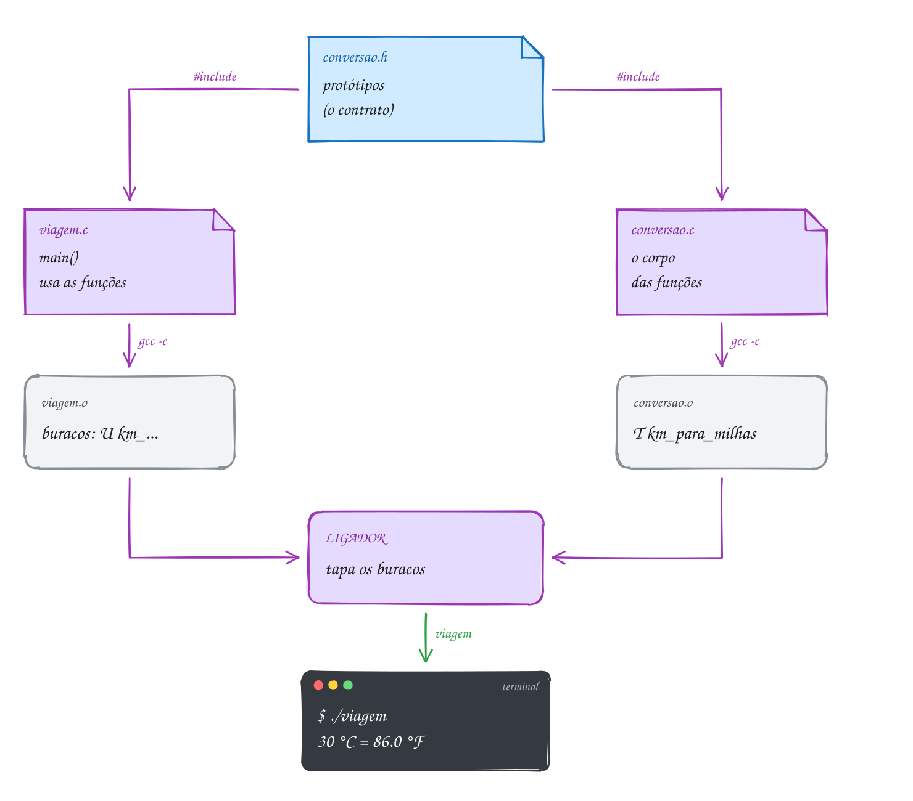
O conversao.h:
// conversao.h · a interface do módulo: O QUE ele oferece
#ifndef CONVERSAO_H
#define CONVERSAO_H
double celsius_para_fahrenheit(double celsius);
double km_para_milhas(double km);
double reais_para_dolares(double reais, double cotacao);
int conversoes_feitas(void);
#endif
O conversao.c (na pasta do assunto) tem o corpo das funções, um contador
static e uma função auxiliar static. O viagem.c só precisa do .h:
#include <stdio.h>
#include "conversao.h" // aspas: procura primeiro na pasta deste arquivo
int main(void) {
printf("30 °C = %.1f °F\n", celsius_para_fahrenheit(30));
printf("100 km = %.1f milhas\n", km_para_milhas(100));
printf("R$ 1000.00 = US$ %.2f\n", reais_para_dolares(1000, 5.40));
return 0;
}
// Compilando à mão (o gcc com as flags de estudo faz isso sozinho):
// gcc -std=c17 -Wall -Wextra viagem.c conversao.c -o viagem
// Saída:
// 30 °C = 86.0 °F
// 100 km = 62.1 milhas
// R$ 1000.00 = US$ 185.19
Cada .c passa pelo compilador separado; o erro de "função que não existe"
só aparece no ligador:
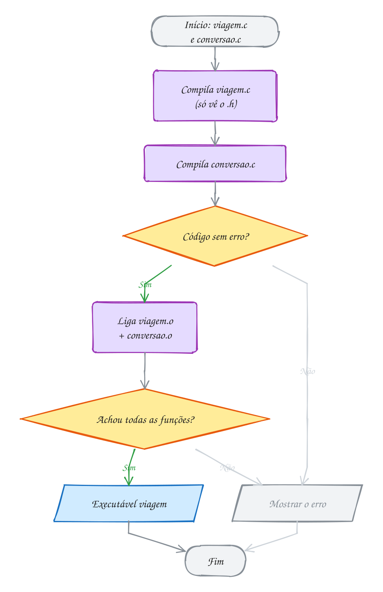
Exemplo A067 · O .h incluído duas vezes e o protótipo que converte
#include <stdio.h>
#include "0034-conversao.h"
#include "0034-conversao.h" // de propósito: o include guard faz esta virar nada
int main(void) {
int trecho = 42; // int
int orcamento = 2700; // int
// o protótipo do .h diz que os parâmetros são double:
// o compilador converte 42 em 42.0 antes de chamar
printf("Maratona: %d km = %.1f milhas\n", trecho, km_para_milhas(trecho));
printf("Orçamento: R$ %d = US$ %.2f\n", orcamento,
reais_para_dolares(orcamento, 5.40));
// a função do módulo vira peça de uma conta maior
double ida_e_volta = 2 * km_para_milhas(trecho);
printf("Ida e volta: %.1f milhas\n", ida_e_volta);
printf("Conversões feitas: %d\n", conversoes_feitas());
return 0;
}
// Para ver o guard trabalhando: gcc -E A067.c | grep -c km_para_milhas
// dá 3: o protótipo aparece uma vez só, mais as duas linhas do main.
// Saída:
// Maratona: 42 km = 26.1 milhas
// Orçamento: R$ 2700 = US$ 500.00
// Ida e volta: 52.2 milhas
// Conversões feitas: 3
gcc ~/LPEDC/material/A067.c ~/LPEDC/material/0034-conversao.c -o ~/LPEDC/material/A067 && ~/LPEDC/material/A067
Exemplo A068 · O módulo guarda segredos
#include <stdio.h>
#include "0034-conversao.h"
int main(void) {
double maxima = 0;
for (int dia = 1; dia <= 3; dia++) {
double f = celsius_para_fahrenheit(20 + dia * 5); // 25, 30, 35 °C
printf("Dia %d: %.1f °F\n", dia, f);
maxima = f > maxima ? f : maxima;
}
printf("Máxima: %.1f °F\n", maxima);
printf("Conversões feitas: %d\n", conversoes_feitas());
// contador = 0; // erro: 'contador' undeclared (é static em conversao.c)
// contar(1.0); // erro: contar não está no .h e é static: só existe lá
return 0;
}
// Saída:
// Dia 1: 77.0 °F
// Dia 2: 86.0 °F
// Dia 3: 95.0 °F
// Máxima: 95.0 °F
// Conversões feitas: 3
gcc ~/LPEDC/material/A068.c ~/LPEDC/material/0034-conversao.c -o ~/LPEDC/material/A068 && ~/LPEDC/material/A068
Exercício E199 · ★☆☆
Monte o módulo "frete" num arquivo só, com cada peça no bloco certo. Os três blocos já estão marcados no esqueleto: "// frete.h" (o que o módulo oferece), "// main.c" (quem usa) e "// frete.c" (como ele faz).
no frete.h: o include guard (#ifndef FRETE_H / #define FRETE_H / #endif),
#define FRETE_GRATIS_ACIMA 200.0 e o protótipo
double calcular_frete(double valor_compra, double peso_kg,
int distancia_km);
no frete.c: static double taxa_por_km(int distancia_km), que devolve
0.20 por km, e o corpo de calcular_frete
no main.c: o main
O frete é grátis quando a compra chega a FRETE_GRATIS_ACIMA; senão, é R$ 10.00 + R$ 1.50 por kg + a taxa por km. Calcule três pedidos.
Saída esperada:
Pedido 1 (R$ 150.00, 2.0 kg, 30 km): frete R$ 19.00
Pedido 2 (R$ 250.00, 5.0 kg, 100 km): frete R$ 0.00
Pedido 3 (R$ 80.00, 1.0 kg, 12 km): frete R$ 13.90
gcc ~/LPEDC/material/E199.c ~/LPEDC/material/0034-conversao.c -o ~/LPEDC/material/E199 && ~/LPEDC/material/E199
Exercício E201 · ★★☆
O módulo conversao (conversao.h e conversao.c, nesta pasta) converte km em milhas, mas não faz o contrário. Sem mexer no módulo, escreva NESTE arquivo "double milhas_para_km(double milhas)" (1 milha = 1.609344 km) e use as duas funções juntas: a maratona de 26.2 milhas em km; a volta completa km_para_milhas(milhas_para_km(26.2)); a meia maratona de 13.1 milhas em km; e quantas conversões o módulo contou (conversoes_feitas).
Saída esperada:
Maratona: 26.2 milhas = 42.2 km
Volta completa: 26.2 milhas
Meia: 13.1 milhas = 21.1 km
Conversões do módulo: 1
gcc ~/LPEDC/material/E201.c ~/LPEDC/material/0034-conversao.c -o ~/LPEDC/material/E201 && ~/LPEDC/material/E201
Exercício E202 · ★★☆
Escreva, num arquivo só, um módulo imitado: o bloco "// desconto.h" com o protótipo de "double aplicar_desconto(double preco, double percentual)", o bloco "// main.c" com o main, que mostra o preço de um tênis de R$ 299.90 com 20% de desconto, e o bloco "// desconto.c" com a definição da função (preco - preco * percentual / 100). O programa tem que compilar e ligar.
Saída esperada:
Tênis: R$ 239.92
gcc ~/LPEDC/material/E202.c ~/LPEDC/material/0034-conversao.c -o ~/LPEDC/material/E202 && ~/LPEDC/material/E202
Exercício E203 · ★★★
Escreva o módulo "placar" de um campeonato entre dois times, num arquivo só, com os blocos "// placar.h", "// main.c" e "// placar.c". Os dados moram em globais static no bloco do placar.c: os gols da partida atual de cada time e os pontos e gols de cada um no campeonato. Ninguém de fora mexe neles sem passar pelas funções:
void marcar_gol(int time) time 1 (casa) ou 2 (visitante)
void encerrar_partida(void) mostra "Partida N: X x Y", dá 3 pontos
para quem venceu (1 para cada no empate),
soma os gols no campeonato e zera o placar
int pontos(int time)
int gols(int time) gols no campeonato
Uma função static do placar.c, "void anotar(int time)", é a única que mexe nos gols da partida; marcar_gol só a chama. O main simula: 2 x 1, 0 x 0 e 1 x 3, e mostra a tabela.
Saída esperada:
Partida 1: 2 x 1
Partida 2: 0 x 0
Partida 3: 1 x 3
Casa: 4 pontos, 3 gols
Visitante: 4 pontos, 4 gols
gcc ~/LPEDC/material/E203.c ~/LPEDC/material/0034-conversao.c -o ~/LPEDC/material/E203 && ~/LPEDC/material/E203
O "localizar e substituir" do editor troca todo TAXA por 0.05 no arquivo,
sem entender nada do texto. Ele não sabe se TAXA é variável, comentário ou
pedaço de outra palavra; só troca. O C tem uma etapa que trabalha desse
jeito, e você já a usa sem perceber, toda vez que escreve #include ou
#define.
Essa etapa é o pré-processador. Ele roda antes do compilador e cuida
de toda linha que começa com #, as diretivas (DEITEL; DEITEL, 2011, cap.
13). O #include cola um arquivo; o #define cria uma substituição. Quando o
compilador recebe o código, as diretivas já sumiram e as trocas já foram
feitas. O compilador nunca vê o nome TAXA, só o 0.05 que ficou no lugar.
Você já usa #define TAXA 0.05 para constantes. Com parâmetros, o #define
vira uma macro:
#define QUAD(x) ((x) * (x))
Cada QUAD(alguma coisa) no código vira ((alguma coisa) * (alguma coisa)). Parece uma função, mas não é: não tem tipo, não faz chamada, não
cria quadro na pilha. É troca de texto, feita antes de compilar (GNU,
s.d.). Um detalhe de escrita decide tudo: o nome e o ( ficam colados. Com
espaço, #define QUAD (x) ((x) * (x)) define uma constante sem parâmetro,
que vale o texto (x) ((x) * (x)).
Por ser troca de texto, a macro não respeita a precedência dos operadores
(DEITEL; DEITEL, 2011, cap. 13). Suponha #define QUAD_RUIM(x) x * x e o
terreno com lado = 2. A chamada QUAD_RUIM(lado + 3) chega ao compilador
como lado + 3 * lado + 3, a multiplicação vem primeiro e o resultado é 11,
não 25. A regra é pôr parênteses em volta de cada parâmetro e em volta da
expressão inteira, como no QUAD acima. Os de dentro protegem o argumento;
os de fora protegem a macro quando ela aparece no meio de outra conta.
O pré-processador também decide o que chega ao compilador. Isso é a
compilação condicional (BACKES, 2013, cap. 13). Um trecho entre
#ifdef DEPURAR e #endif só é compilado se o nome DEPURAR estiver
definido; o #ifndef faz o contrário. O #if testa uma expressão constante,
e #elif e #else dão os outros caminhos, como num if comum. O nome pode
vir do próprio código ou da linha de comando: gcc -DDEPURAR define
DEPURAR sem mexer no arquivo. E #if 0 ... #endif desliga um trecho
inteiro de uma vez. O include guard do assunto 0034 é uma compilação
condicional.
Algumas peças prontas ajudam a depurar (GNU, s.d.). A macro __LINE__ vira o
número da linha em que aparece. O identificador __func__, que o compilador
cria dentro de cada função, guarda o nome da função atual. E o operador #,
usado dentro de uma macro, transforma o argumento em texto: numa macro
MOSTRAR(x) que imprime #x e depois (x), a chamada MOSTRAR(lado + 3)
escreve lado + 3 = 5. Com isso dá para montar mensagens de erro que dizem
onde e o quê.
Função ou macro? Para cálculo, prefira uma função pequena (LAGO, s.d.). Ela
confere os tipos dos argumentos, avalia cada argumento uma vez e aparece no
depurador. A macro fica para o que só ela faz: constantes, compilação
condicional, __LINE__ e o operador #.
[!WARNING] A macro avalia o argumento cada vez que ele aparece: com
#define MAIOR(a, b) ((a) > (b) ? (a) : (b)),MAIOR(x++, y)pode incrementarxduas vezes. E sem;no#define:#define TAXA 0.05;fazpreco * TAXA + 1virarpreco * 0.05; + 1.
O terreno tem lado + 3 metros de lado, com lado = 2.
QUAD_RUIM(lado + 3) chega ao compilador como lado + 3 * lado + 3 e dá 11;
a versão com parênteses dá 25:
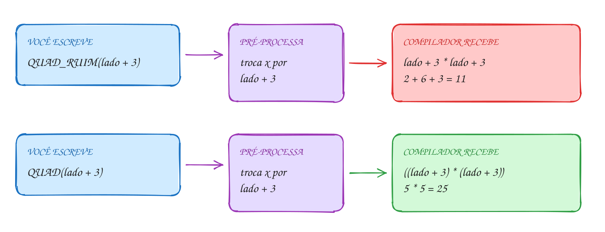
#include <stdio.h>
#define QUAD_RUIM(x) x * x // sem parênteses: perigo
#define QUAD(x) ((x) * (x)) // parênteses no parâmetro E em volta de tudo
int main(void) {
int lado = 2;
// terreno quadrado de lado (2 + 3) metros
printf("QUAD_RUIM(lado + 3) = %d\n", QUAD_RUIM(lado + 3)); // 2 + 3 * 2 + 3
printf("QUAD(lado + 3) = %d\n", QUAD(lado + 3)); // ((2 + 3) * (2 + 3))
// quantos lotes de 5 x 5 cabem em 100 m2?
printf("100 / QUAD_RUIM(5) = %d\n", 100 / QUAD_RUIM(5)); // 100 / 5 * 5
printf("100 / QUAD(5) = %d\n", 100 / QUAD(5)); // 100 / ((5) * (5))
return 0;
}
// Saída:
// QUAD_RUIM(lado + 3) = 11
// QUAD(lado + 3) = 25
// 100 / QUAD_RUIM(5) = 100
// 100 / QUAD(5) = 4
O pré-processador só procura o nome e troca; quem acha o erro, quando acha, é o compilador:
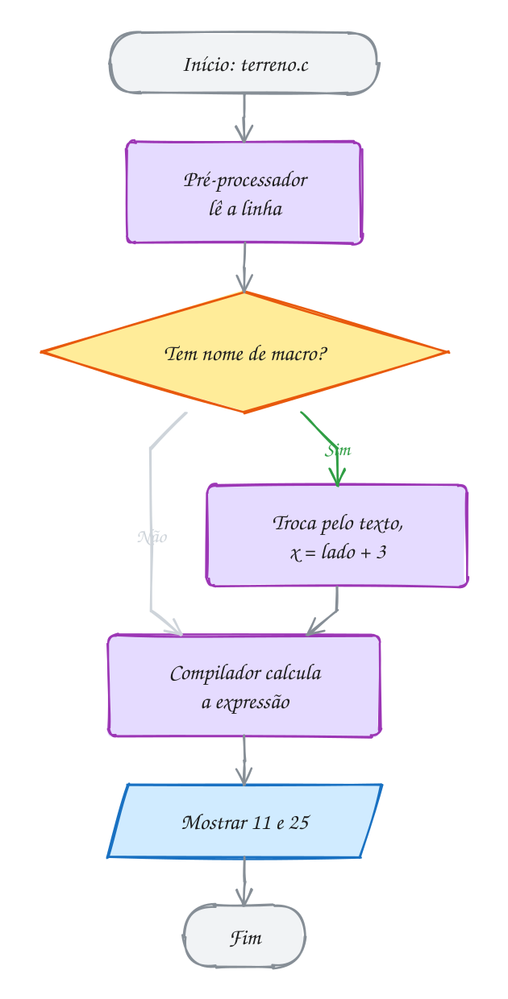
A compilação condicional, com #define DEPURAR no topo ou gcc -DDEPURAR:
#ifdef DEPURAR // se o nome DEPURAR foi definido...
printf("[debug] total = %d\n", total);
#endif
Exemplo A069 · A macro não tem tipo nem é função
#include <stdio.h>
#define DIAS_UTEIS 22
#define HORAS_POR_DIA 8
#define HORAS_NO_MES (DIAS_UTEIS * HORAS_POR_DIA) // macro feita de macros
#define MAIOR(a, b) ((a) > (b) ? (a) : (b)) // serve para int, double...
int maior_int(int a, int b) { // a função tem tipo: só int
return a > b ? a : b;
}
int main(void) {
double salario = 3520.00;
printf("Horas no mês: %d\n", HORAS_NO_MES);
printf("Valor da hora: R$ %.2f\n", salario / HORAS_NO_MES);
// a macro só cola texto: com double, a comparação é feita em double
printf("MAIOR(4.75, 4.70) = %.2f\n", MAIOR(4.75, 4.70));
// a função converte os argumentos para int antes: 4 e 4
printf("maior_int(4.75, 4.70) = %d\n", maior_int(4.75, 4.70));
// com int, as duas concordam
printf("MAIOR(12, 30) = %d, maior_int(12, 30) = %d\n",
MAIOR(12, 30), maior_int(12, 30));
return 0;
}
// Saída:
// Horas no mês: 176
// Valor da hora: R$ 20.00
// MAIOR(4.75, 4.70) = 4.75
// maior_int(4.75, 4.70) = 4
// MAIOR(12, 30) = 30, maior_int(12, 30) = 30
gcc ~/LPEDC/material/A069.c -o ~/LPEDC/material/A069 && ~/LPEDC/material/A069
Exemplo A070 · Modo depuração com #ifdef
#include <stdio.h>
#define DEPURAR // apague esta linha e os [debug] somem do programa
#ifdef DEPURAR
#define LOG(msg) printf("[debug] %s, linha %d: %s\n", __func__, __LINE__, msg)
#else
#define LOG(msg) // vira nada
#endif
#define MOSTRAR(expr) printf(#expr " = %d\n", (expr)) // # vira texto
int parcelas(int total, int valor_parcela) {
LOG("calculando");
return (total + valor_parcela - 1) / valor_parcela; // arredonda para cima
}
int main(void) {
LOG("começou");
MOSTRAR(parcelas(1000, 300));
MOSTRAR(7 * 6);
return 0;
}
// Saída:
// [debug] main, linha 21: começou
// [debug] parcelas, linha 16: calculando
// parcelas(1000, 300) = 4
// 7 * 6 = 42
gcc ~/LPEDC/material/A070.c -o ~/LPEDC/material/A070 && ~/LPEDC/material/A070
Exercício E206 · ★☆☆
Escreva três macros à prova de precedência e teste com os valores abaixo:
MAIOR(a, b) o maior dos dois
ABS(x) o valor absoluto
ENTRE(x, min, max) 1 se min <= x <= max, senão 0
Saída esperada:
MAIOR(7, 12) = 12
ABS(-8) = 8
ABS(3 - 10) = 7
ENTRE(15, 10, 20) = 1
ENTRE(25, 10, 20) = 0
100 / ABS(-5 * 2) = 10
Exercício E207 · ★★☆
Escreva o programa da lanchonete com duas macros: DESCONTO (0.10) e PRECO_COMBO (25 + 5, à prova de precedência). Com preco = 35.00, mostre o desconto (preco * DESCONTO) e o valor de dois combos (2.0 * PRECO_COMBO).
Saída esperada:
Desconto: R$ 3.50
Dois combos: R$ 60.00
Exercício E208 · ★★☆
Escreva um simulador de parcelas com modo de teste. Uma compra de R$ 1000.00 em 4 parcelas com juros de 2% ao mês: cada parcela é o valor original dividido por 4, mais 2% de juros por mês de espera (a 1ª parcela tem 2%, a 2ª 4%, e assim por diante, juros simples). Mostre o total pago.
Com "#define MODO_TESTE" no topo, mostre também cada parcela, com o prefixo "[teste]". Sem a linha, só o total. Use #ifdef; nada de if comum.
Saída esperada com MODO_TESTE:
[teste] parcela 1: 255.00
[teste] parcela 2: 260.00
[teste] parcela 3: 265.00
[teste] parcela 4: 270.00
Total: R$ 1050.00
Saída esperada sem MODO_TESTE:
Total: R$ 1050.00
Exercício E209 · ★★★
A macro avalia o argumento cada vez que ele aparece. Escreva a macro MAIOR(a, b), à prova de precedência, a função "int maior(int a, int b)", a função "int maior3(int a, int b, int c)" (usa maior) e "int pontos(int p)", que soma 1 na global chamadas e devolve p. No main, mostre (x = 5, y = 3): MAIOR(x++, y) e maior(x++, y); MAIOR e maior com pontos(40) e pontos(25); MAIOR aninhada e maior3 com pontos(7), pontos(19) e pontos(12). Cada linha mostra m e (x ou chamadas).
Saída esperada:
macro: m = 6, x = 7
função: m = 5, x = 6
macro: m = 40, chamadas = 3
função: m = 40, chamadas = 2
macro aninhada: m = 19, chamadas = 7
maior3: m = 19, chamadas = 3
Sexta à noite, fila no food truck. O caixa lança os pedidos pelo código,
soma, põe 10% de serviço, recebe uma nota de R$ 50 e devolve o troco com o
menor número de notas e moedas. Parece um programa só, mas cabe nele quase
tudo o que o módulo 04 ensinou: um módulo separado com o cardápio, funções pequenas com
parâmetros e retorno, um contador static escondido, uma constante
do pré-processador para a taxa e uma função recursiva para o troco.
Antes de escrever uma linha, divida o trabalho. Cada tarefa vira uma função
com um nome que diz o que ela faz (DEITEL; DEITEL, 2011, cap. 5). Pense na
lanchonete de verdade: o gerente não frita, não cobra e não conta troco; ele
pede a cada um e junta os resultados. No programa, o main faz o papel do
gerente. Ele chama ler_codigo, preco_centavos e dar_troco, e cada uma
resolve a sua parte sem saber como as outras trabalham. Quando algo dá
errado, o nome da função já diz onde procurar.
O cardápio fica num módulo próprio, o par cardapio.h e cardapio.c do
assunto 0034 (BACKES, 2013, cap. 13). O .h promete as funções de
consulta; o .c guarda os preços e o contador vendidos, uma global
static que só o módulo pode alterar. Quem está em caixa.c lê o contador
pela função itens_vendidos(), mas não consegue mudá-lo por engano.
Uma decisão vem antes de qualquer código: dinheiro em centavos, num
int. R$ 7,90 vira 790. O motivo é a precisão. Um double guarda os
números em binário, e valores como 0,1 não têm representação exata; por isso
0.1 + 0.2 não dá exatamente 0.3 (assunto 0012), e um troco calculado
assim pode errar um centavo. Com inteiros, toda conta é exata. Para mostrar,
%d.%02d com total / 100 e total % 100 monta o texto "42.24". O único
double do programa é o valor pago, que chega do teclado e é convertido de
imediato com lround(pago * 100), que arredonda para o inteiro mais
próximo.
O troco recursivo se lê como uma frase (FEOFILOFF, 2009, cap. 5). "Se o troco
zerou, acabou. Se a nota atual cabe no troco, dê essa nota e resolva o resto.
Se não cabe, tente a nota seguinte." O caso base é o troco zerado. Os dois
casos recursivos diminuem alguma coisa: o primeiro diminui o troco, o segundo
passa para uma nota menor. Como a menor moeda é de 1 centavo, que cabe em
qualquer troco positivo, toda chamada chega mais perto do fim. A função
proxima_nota diz qual é a nota seguinte; ela é uma função pura, que só
depende do que recebe e não muda nada fora dela.
Com as peças separadas, dá para testar cada uma sozinha, sem digitar pedidos
no teclado. O exemplo A072 usa uma macro CONFERIR para comparar o preço, o
contador e as notas com o valor esperado. A tabela mostra onde cada peça mora
e o que ela usa do módulo:
| Peça | Onde | O que usa do módulo |
|---|---|---|
mostrar_cardapio, preco_centavos, mostrar_item |
cardapio.c |
módulo .h/.c, switch |
vendidos |
cardapio.c |
global static: só o módulo mexe |
ler_codigo |
caixa.c |
validação com do...while e retorno do scanf |
proxima_nota |
caixa.c |
função pura: entra uma nota, sai a seguinte |
dar_troco |
caixa.c |
recursão: caso base "troco zerado" |
TAXA_SERVICO |
caixa.c |
#define |
[!WARNING] Efeito colateral escondido:
preco_centavosparece só consultar um preço, mas também soma 1 no contador de vendidos. Chamá-la duas vezes para o mesmo pedido conta o item em dobro. Quando a função muda estado, diga no nome (registrar_pedido) ou separe em duas.
Os pedidos 1, 2 e 3 somam R$ 38,40; com 10% de serviço, R$ 42,24. Pagando R$ 50, o troco de R$ 7,76 sai da recursão como 5 + 2 + 0,50 + 0,25 + 0,01:
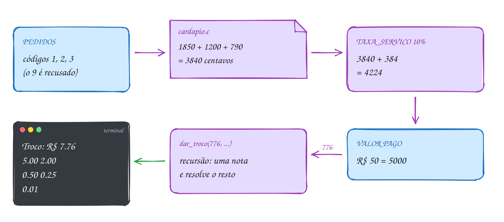
O caixa.c usa o módulo do cardápio (o cardapio.h e o cardapio.c estão na
pasta do assunto):
#include <math.h>
#include <stdio.h>
#include "cardapio.h"
#define TAXA_SERVICO 10 // por cento
// lê um código de 0 a 4; insiste até vir um válido
int ler_codigo(void) {
int codigo;
int lidos;
do {
printf("Código (0 fecha): ");
lidos = scanf("%d", &codigo);
if (lidos != 1) {
return 0; // entrada acabou ou não é número: fecha a conta
}
} while (codigo < 0 || codigo > 4);
return codigo;
}
// a nota seguinte, da maior para a menor (em centavos)
int proxima_nota(int nota) {
switch (nota) {
case 10000: return 5000;
case 5000: return 2000;
case 2000: return 1000;
case 1000: return 500;
case 500: return 200;
case 200: return 100;
case 100: return 50;
case 50: return 25;
case 25: return 10;
case 10: return 5;
default: return 1;
}
}
// recursão: dá uma nota e resolve o troco que sobrou
void dar_troco(int centavos, int nota) {
if (centavos == 0) {
return; // caso base: troco completo
}
if (centavos >= nota) {
printf(" %d.%02d\n", nota / 100, nota % 100);
dar_troco(centavos - nota, nota);
} else {
dar_troco(centavos, proxima_nota(nota));
}
}
int main(void) {
int total = 0;
mostrar_cardapio();
for (int codigo = ler_codigo(); codigo != 0; codigo = ler_codigo()) {
total += preco_centavos(codigo);
mostrar_item(codigo);
printf(" adicionado\n");
}
int servico = total * TAXA_SERVICO / 100;
int conta = total + servico;
printf("%d itens, conta com serviço: R$ %d.%02d\n",
itens_vendidos(), conta / 100, conta % 100);
double pago;
printf("Valor pago: ");
if (scanf("%lf", &pago) != 1) {
return 0;
}
int troco = (int)lround(pago * 100) - conta;
if (troco < 0) {
printf("Faltam R$ %d.%02d\n", -troco / 100, -troco % 100);
return 0;
}
printf("Troco: R$ %d.%02d\n", troco / 100, troco % 100);
dar_troco(troco, 10000);
return 0;
}
// Exemplo de uso (o que você digita vem depois dos dois-pontos):
// 1 X-salada R$ 18.50
// 2 Batata R$ 12.00
// 3 Suco R$ 7.90
// 4 Açaí R$ 15.00
// Código (0 fecha): 1
// X-salada adicionado
// Código (0 fecha): 2
// Batata adicionado
// Código (0 fecha): 3
// Suco adicionado
// Código (0 fecha): 9
// Código (0 fecha): 0
// 3 itens, conta com serviço: R$ 42.24
// Valor pago: 50
// Troco: R$ 7.76
// 5.00
// 2.00
// 0.50
// 0.25
// 0.01
// Para testar sem digitar, salve como caixa.c numa pasta sua, com cópias do
// cardapio.h e do cardapio.c, e rode: printf '1\n2\n3\n9\n0\n50\n' | ./caixa
O laço dos pedidos termina com o código 0; depois vêm a conta, o pagamento e o
troco, que é a recursão de dar_troco:
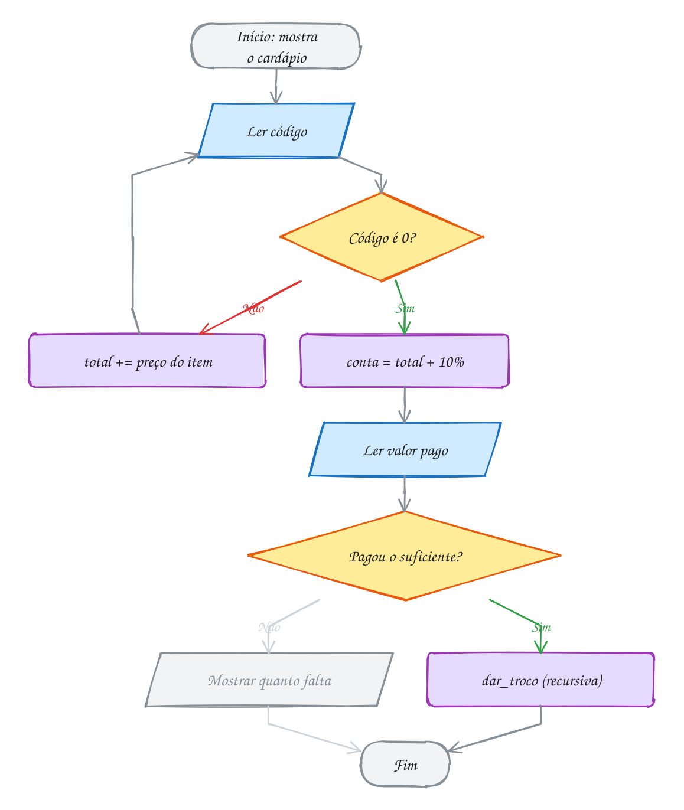
Exemplo A071 · Rachando a conta da mesa sem perder centavo
#include <stdio.h>
#include "0036-cardapio.h"
#define TAXA_SERVICO 10 // por cento
void mostrar_reais(int centavos) {
printf("R$ %d.%02d", centavos / 100, centavos % 100);
}
// lança um item e devolve o preço (0 se o código não existe)
int pedir(int codigo) {
int preco = preco_centavos(codigo);
if (preco == 0) {
printf("código %d não existe\n", codigo);
return 0;
}
mostrar_item(codigo);
printf(": ");
mostrar_reais(preco);
printf("\n");
return preco;
}
// quanto a pessoa número "pessoa" (1, 2, ...) paga:
// a divisão inteira deixa uma sobra, e as primeiras pagam 1 centavo a mais
int parte(int conta, int pessoas, int pessoa) {
int base = conta / pessoas;
int sobra = conta % pessoas;
if (pessoa <= sobra) {
return base + 1;
}
return base;
}
// recursiva: soma as partes da pessoa "de" até a última, para conferir
int soma_partes(int conta, int pessoas, int de) {
if (de > pessoas) {
return 0; // caso base: não sobrou ninguém
}
return parte(conta, pessoas, de) + soma_partes(conta, pessoas, de + 1);
}
int main(void) {
int total = 0;
total += pedir(1); // uma linha por pedido: assim a ordem na tela é garantida
total += pedir(1);
total += pedir(2);
total += pedir(7);
total += pedir(4);
int conta = total + total * TAXA_SERVICO / 100;
printf("%d itens, com serviço: ", itens_vendidos());
mostrar_reais(conta);
printf("\n");
int pessoas = 3;
for (int p = 1; p <= pessoas; p++) {
printf("Pessoa %d paga ", p);
mostrar_reais(parte(conta, pessoas, p));
printf("\n");
}
printf("Conferindo: ");
mostrar_reais(soma_partes(conta, pessoas, 1));
printf("\n");
return 0;
}
// Saída:
// X-salada: R$ 18.50
// X-salada: R$ 18.50
// Batata: R$ 12.00
// código 7 não existe
// Açaí: R$ 15.00
// 4 itens, com serviço: R$ 70.40
// Pessoa 1 paga R$ 23.47
// Pessoa 2 paga R$ 23.47
// Pessoa 3 paga R$ 23.46
// Conferindo: R$ 70.40
gcc ~/LPEDC/material/A071.c ~/LPEDC/material/0036-cardapio.c -o ~/LPEDC/material/A071 && ~/LPEDC/material/A071
Exemplo A072 · Testando as peças do caixa
#include <stdio.h>
#include "0036-cardapio.h"
int falhas = 0;
#define CONFERIR(cond) \
do { \
if (cond) { \
printf("ok: %s\n", #cond); \
} else { \
printf("FALHOU: %s (linha %d)\n", #cond, __LINE__); \
falhas++; \
} \
} while (0)
int proxima_nota(int nota) {
switch (nota) {
case 10000: return 5000;
case 5000: return 2000;
case 2000: return 1000;
case 1000: return 500;
case 500: return 200;
case 200: return 100;
case 100: return 50;
case 50: return 25;
case 25: return 10;
case 10: return 5;
default: return 1;
}
}
// quantas notas e moedas o troco usa (recursiva, igual a dar_troco)
int contar_notas(int centavos, int nota) {
if (centavos == 0) {
return 0;
}
if (centavos >= nota) {
return 1 + contar_notas(centavos - nota, nota);
}
return contar_notas(centavos, proxima_nota(nota));
}
int main(void) {
CONFERIR(preco_centavos(1) == 1850);
CONFERIR(preco_centavos(9) == 0);
CONFERIR(itens_vendidos() == 1); // o código 9 não conta
CONFERIR(proxima_nota(10000) == 5000);
CONFERIR(contar_notas(776, 10000) == 5); // 5 + 2 + 0.50 + 0.25 + 0.01
CONFERIR(contar_notas(18600, 10000) == 6); // 100 + 50 + 20 + 10 + 5 + 1
printf("Falhas: %d\n", falhas);
return 0;
}
// Saída:
// ok: preco_centavos(1) == 1850
// ok: preco_centavos(9) == 0
// ok: itens_vendidos() == 1
// ok: proxima_nota(10000) == 5000
// ok: contar_notas(776, 10000) == 5
// ok: contar_notas(18600, 10000) == 6
// Falhas: 0
gcc ~/LPEDC/material/A072.c ~/LPEDC/material/0036-cardapio.c -o ~/LPEDC/material/A072 && ~/LPEDC/material/A072
Exercício E212 · ★☆☆
Escreva "double imc(double peso, double altura)" e "void mostrar_imc(int pessoa, double peso, double altura)", que mostra o IMC com 1 casa e a classificação (abaixo de 18.5, normal abaixo de 25, senão acima). O main só faz três chamadas: 70.0 kg e 1.75 m; 85.0 kg e 1.75 m; 52.0 kg e 1.72 m.
Saída esperada:
Pessoa 1: IMC 22.9 (normal)
Pessoa 2: IMC 27.8 (acima)
Pessoa 3: IMC 17.6 (abaixo)
gcc ~/LPEDC/material/E212.c ~/LPEDC/material/0036-cardapio.c -o ~/LPEDC/material/E212 && ~/LPEDC/material/E212
Exercício E213 · ★★☆
O app de hábitos mostra "dia 291 de 365". Escreva três funções que se apoiam umas nas outras:
bool eh_bissexto(int ano)
int dias_no_mes(int mes, int ano) usa eh_bissexto para fevereiro
int dia_do_ano(int dia, int mes, int ano) soma os meses anteriores
Saída esperada:
18/10/2026: dia 291 de 365
01/03/2024: dia 61 de 366
31/12/2024: dia 366 de 366
29/02/2023: data inválida
gcc ~/LPEDC/material/E213.c ~/LPEDC/material/0036-cardapio.c -o ~/LPEDC/material/E213 && ~/LPEDC/material/E213
Exercício E214 · ★★☆
Tudo do módulo num programa só. Escreva as peças e o main:
#define DOBRO(x) o dobro, à prova de precedência
int total = 0; global
int proximo_id(void) static id começando em 10; soma 1 e devolve
int soma_ate(int n) recursiva: 0 + 1 + ... + n; soma 1 na global
total a cada chamada
int altera(int total) põe 99 no parâmetro e devolve
O main mostra, nesta ordem: um id; a soma de mais dois ids; soma_ate(4); a global total; chama altera(total) sem guardar o retorno e mostra a global de novo; e por fim DOBRO(total + 1).
Saída esperada:
id: 11
dois ids somados: 25
soma_ate(4) = 10
chamadas: 5
depois de altera: 5
DOBRO(total + 1) = 12
gcc ~/LPEDC/material/E214.c ~/LPEDC/material/0036-cardapio.c -o ~/LPEDC/material/E214 && ~/LPEDC/material/E214
Exercício E215 · ★★★
Generalize o binário recursivo (E190) para qualquer base de 2 a 16. Escreva:
char digito(int valor) 0..9 viram '0'..'9'; 10..15 viram 'A'..'F'
void em_base(int n, int base) recursiva, imprime n na base
void mostrar(int n, int base) imprime "n na base b: ..." e pula linha;
recusa base fora de 2..16
Saída esperada:
255 na base 16: FF
255 na base 2: 11111111
2026 na base 8: 3752
2026 na base 16: 7EA
46655 na base 6: 555555
10 na base 20: base inválida
gcc ~/LPEDC/material/E215.c ~/LPEDC/material/0036-cardapio.c -o ~/LPEDC/material/E215 && ~/LPEDC/material/E215
30 exercícios que misturam os assuntos do módulo, no ritmo da prova. Arquivos P0401.c a P0430.c, em material/; resoluções em _respostas/04-funcoes/lista/.
Exercício P0401 · ★☆☆ · O desconto do Pix
A loja dá 10% de desconto para quem paga no Pix. Escreva a função "double preco_pix(double preco)", que devolve o preço com o desconto, e use no main para três produtos: tênis de R$ 299.90, mochila de R$ 159.00 e boné de R$ 59.90:
Saída esperada:
Tênis: R$ 299.90 -> R$ 269.91 no Pix
Mochila: R$ 159.00 -> R$ 143.10 no Pix
Boné: R$ 59.90 -> R$ 53.91 no Pix
Resposta esperada: R$ 269.91, R$ 143.10 e R$ 53.91.
Exercício P0402 · ★☆☆ · O artilheiro do campeonato
Três atacantes disputam a artilharia: Duda com 12 gols, Léo com 17 e Bia com 15. Escreva a função "int maior(int a, int b)" e, sem escrever outra função, use maior duas vezes, uma dentro da outra, para achar o maior dos três:
Saída esperada:
Gols: 12, 17 e 15
Artilheiro com 17 gols
Exercício P0403 · ★☆☆ · As ordens de largada
De quantas maneiras os carros podem se alinhar no grid de largada? Com n carros, são n! maneiras. Escreva a função recursiva "long long fatorial(int n)" (0! = 1 é o caso base; n! = n × (n − 1)! é o caso recursivo) e mostre o resultado para 5, 10 e 15 carros:
Saída esperada:
5 carros: 120 maneiras
10 carros: 3628800 maneiras
15 carros: 1307674368000 maneiras
Resposta esperada: 120, 3628800 e 1307674368000.
Exercício P0404 · ★☆☆ · O reajuste que não chegou
O programa abaixo chama aplicar_reajuste para dar 5% de aumento ao salário de R$ 2400.00, mas o salário continua igual depois da chamada. O erro está lá de propósito: a função recebe uma cópia. Conserte trocando a função por "double com_reajuste(double salario)", que devolve o novo valor, e guarde o retorno no main:
Saída esperada:
Antes: R$ 2400.00
Depois: R$ 2520.00
Exercício P0405 · ★☆☆ · O protótipo esquecido
O programa abaixo não compila, de propósito: o main chama area_terreno antes de o compilador saber que ela existe. Conserte sem mudar a ordem das funções, só acrescentando o protótipo no lugar certo. O terreno tem 12.5 m por 30 m:
Saída esperada:
Área do terreno: 375.0 m2
Exercício P0406 · ★☆☆ · O recorde do fliperama
O fliperama guarda o recorde da máquina. Escreva "int recorde(int pontos)", que recebe os pontos de uma partida e devolve o maior valor visto até agora, guardado numa variável static local (sem global). Chame com as partidas de 1200, 3400, 2100 e 5000 pontos:
Saída esperada:
Partida com 1200 -> recorde 1200
Partida com 3400 -> recorde 3400
Partida com 2100 -> recorde 3400
Partida com 5000 -> recorde 5000
Resposta esperada: 1200, 3400, 3400 e 5000.
Exercício P0407 · ★☆☆ · A pirâmide de latas
O repositor do mercado monta uma pirâmide de latas: a base tem n latas, a fileira de cima tem n − 1, e assim até 1 lata no topo. Escreva a função recursiva "int latas(int n)", que devolve o total de latas de uma pirâmide com base n, e mostre para bases de 1, 4 e 10:
Saída esperada:
Base 1: 1 lata(s)
Base 4: 10 lata(s)
Base 10: 55 lata(s)
Resposta esperada: 1, 10 e 55.
Exercício P0408 · ★☆☆ · Quantos dígitos tem
Escreva a função recursiva "int digitos(int n)", que conta quantos dígitos tem um número positivo, sem laço: um número menor que 10 tem 1 dígito; os outros têm 1 dígito a mais que n / 10. Teste com 7, 2026 e 1000000:
Saída esperada:
7 tem 1 dígito(s)
2026 tem 4 dígito(s)
1000000 tem 7 dígito(s)
Resposta esperada: 1, 4 e 7.
Exercício P0409 · ★☆☆ · Qual pizza compensa?
A pizza broto tem 25 cm de diâmetro e custa R$ 30.00; a grande tem 35 cm e custa R$ 50.00. Escreva as macros "#define PI 3.14159265" e "#define AREA_CIRCULO(r) (PI * (r) * (r))" e mostre o preço por cm² de cada uma (o raio é o diâmetro / 2), com 4 casas, e qual compensa mais:
Saída esperada:
Broto: R$ 0.0611 por cm2
Grande: R$ 0.0520 por cm2
Compensa mais: grande
Resposta esperada: R$ 0.0611 e R$ 0.0520; compensa a grande.
Exercício P0410 · ★☆☆ · A barra de progresso do download
Escreva a função "void barra(int percentual)", que desenha uma barra de 10 posições: cada 10% vira um '#', o resto vira '.', e no fim vem o percentual. Chame com 0, 30, 75 e 100:
Saída esperada:
[..........] 0%
[###.......] 30%
[#######...] 75%
[##########] 100%
Resposta esperada: as quatro barras acima.
Exercício P0411 · ★★☆ · O número do pedido ao contrário
Escreva a função recursiva "int inverte(int n, int acumulado)", que devolve n com os dígitos ao contrário, sem laço. A ideia é carregar o resultado parcial num parâmetro: a cada chamada, o último dígito de n passa para o fim de acumulado. O main chama inverte(n, 0). Teste com 12345, 1200 e 7:
Saída esperada:
12345 -> 54321
1200 -> 21
7 -> 7
Resposta esperada: 54321, 21 e 7.
Exercício P0412 · ★★☆ · Três linhas de ônibus no terminal
No terminal, a linha 300 sai a cada 12 minutos, a 450 a cada 18 e a 640 a cada 30. As três saíram juntas às 06:00. Escreva o "int mdc(int a, int b)" recursivo de Euclides, o "int mmc(int a, int b)" que usa o mdc, e descubra quando as três saem juntas de novo:
Saída esperada:
mdc(12, 18) = 6
mmc(12, 18) = 36
As três saem juntas a cada 180 minutos
Próxima saída juntas: 09:00
Resposta esperada: a cada 180 minutos, às 09:00.
Exercício P0413 · ★★☆ · Quantas chamadas custa uma combinação
De quantas formas dá para escolher k pessoas de um grupo de n? É a combinação C(n, k), e ela tem uma definição recursiva: C(n, 0) = C(n, n) = 1 e C(n, k) = C(n − 1, k − 1) + C(n − 1, k). Escreva essa função recursiva e conte, com uma variável global, quantas chamadas ela faz para C(5, 2), C(10, 5) e C(20, 10) (zere o contador antes de cada uma):
Saída esperada:
C(5, 2) = 10 com 19 chamadas
C(10, 5) = 252 com 503 chamadas
C(20, 10) = 184756 com 369511 chamadas
Resposta esperada: 19, 503 e 369511 chamadas.
Exercício P0414 · ★★☆ · Subindo a escada da arquibancada
Na arquibancada, você sobe 1, 2 ou 3 degraus por passo. De quantas formas diferentes dá para subir uma escada de n degraus? Escreva a função recursiva "int formas(int n)": para chegar ao degrau n, o último passo saiu de n − 1, n − 2 ou n − 3. Mostre o resultado para 1 a 10 degraus:
Saída esperada:
1 degrau(s): 1 forma(s)
2 degrau(s): 2 forma(s)
3 degrau(s): 4 forma(s)
4 degrau(s): 7 forma(s)
5 degrau(s): 13 forma(s)
6 degrau(s): 24 forma(s)
7 degrau(s): 44 forma(s)
8 degrau(s): 81 forma(s)
9 degrau(s): 149 forma(s)
10 degrau(s): 274 forma(s)
Resposta esperada: 274 formas para 10 degraus.
Exercício P0415 · ★★☆ · O app de treinos refatorado
O programa abaixo mostra a duração de três treinos, mas repete a mesma conta três vezes. Refatore: escreva "int minutos(int hora, int minuto)", que converte um horário em minutos desde a meia-noite, e "void mostrar(int duracao)", que mostra a duração em h e min. O main deve ficar curto, e a saída tem que continuar a mesma:
Saída esperada:
Treino 1: 1 h 15 min
Treino 2: 0 h 50 min
Treino 3: 2 h 5 min
Total: 4 h 10 min
Resposta esperada: a mesma saída do programa original.
Exercício P0416 · ★★☆ · A média da temperatura ao longo do dia
A estação meteorológica manda uma leitura de cada vez. Escreva "double media_ate_agora(double leitura)", que devolve a média de todas as leituras recebidas até aquela chamada, guardando a soma e a contagem em variáveis static locais. Chame com 30.0, 32.0, 28.0 e 34.0 graus:
Saída esperada:
Leitura 30.0 -> média 30.0
Leitura 32.0 -> média 31.0
Leitura 28.0 -> média 30.0
Leitura 34.0 -> média 31.0
Resposta esperada: 30.0, 31.0, 30.0 e 31.0.
Exercício P0417 · ★★☆ · A pilha da potência na tela
Escreva a potência recursiva "int potencia(int base, int exp, int nivel)" (base^0 = 1; base^exp = base × base^(exp − 1)) que mostra a pilha de chamadas: ao entrar, mostra a chamada com 2 espaços por nível; ao voltar, mostra o resultado no mesmo recuo. O main chama potencia(2, 4, 0):
Saída esperada:
potencia(2, 4)
potencia(2, 3)
potencia(2, 2)
potencia(2, 1)
potencia(2, 0) = 1
= 2
= 4
= 8
= 16
Resultado: 16
Resposta esperada: o desenho acima, Resultado: 16.
Exercício P0418 · ★★☆ · O imposto de cada estado
A mesma loja virtual compila uma versão do sistema para cada estado. Escreva o programa com "#define ESTADO 1" no topo e, com #if, #elif e #else, defina ICMS como 0.20 para o Amazonas (1), 0.18 para São Paulo (2) e 0.17 para os outros, e NOME_ESTADO com o nome. Escreva também a macro MOSTRAR(expr), que mostra o texto da expressão (com #expr) e o valor dela. Para um produto de R$ 100.00:
Saída esperada:
Estado: Amazonas
preco * (1 + ICMS) = 120.00
preco * ICMS = 20.00
Resposta esperada: 120.00 e 20.00 com ESTADO 1.
Exercício P0419 · ★★☆ · O número da numerologia
A numerologia soma os dígitos da data de nascimento até sobrar um dígito só: 27111990 → 30 → 3. Escreva "int soma_digitos(int n)", recursiva, e "int reduz(int n)", também recursiva, que mostra cada passo e devolve o dígito final: se n já tem um dígito, ele é a resposta; senão, reduz a soma dos dígitos. Teste com 27111990 e com 2026:
Saída esperada:
27111990 -> 30 -> 3
2026 -> 10 -> 1
Resposta esperada: 3 e 1.
Exercício P0420 · ★★☆ · O maior dígito que sumiu
A função recursiva abaixo deveria devolver o maior dígito de um número, mas para 9123 devolve 3. O erro está no caso base, de propósito. Conserte só o caso base e confira com os três testes:
Saída esperada:
Maior dígito de 9123: 9
Maior dígito de 4718: 8
Maior dígito de 5: 5
Resposta esperada: 9, 8 e 5.
Exercício P0421 · ★★★ · Hanói com 4 discos e a conta de cada disco
Resolva a Torre de Hanói com 4 discos, das hastes A para C, usando B de apoio. Escreva "void hanoi(int n, char origem, char destino, char apoio)", recursiva, e "void mover(int disco, char de, char para)", que numera e mostra cada movimento e conta quantas vezes cada disco se moveu (sem vetor: quatro contadores e um switch). No fim, mostre o total e a conta de cada disco:
Saída esperada:
1: disco 1 de A para B
2: disco 2 de A para C
3: disco 1 de B para C
4: disco 3 de A para B
5: disco 1 de C para A
6: disco 2 de C para B
7: disco 1 de A para B
8: disco 4 de A para C
9: disco 1 de B para C
10: disco 2 de B para A
11: disco 1 de C para A
12: disco 3 de B para C
13: disco 1 de A para B
14: disco 2 de A para C
15: disco 1 de B para C
Total: 15 movimentos
Disco 1: 8, disco 2: 4, disco 3: 2, disco 4: 1
Resposta esperada: 15 movimentos; 8, 4, 2 e 1.
Exercício P0422 · ★★★ · De volta para a base 10
O sistema antigo grava números em outras bases, escritos com os dígitos de 0 a 9 como se fossem decimais (2026 na base 8 vem como 3752). Escreva a função recursiva "long long para_decimal(long long digitos, int base)", que converte para a base 10 olhando o último dígito e o resto do número, e devolve -1 se algum dígito não existir naquela base. Teste com os quatro casos abaixo:
Saída esperada:
11111101010 na base 2 = 2026
3752 na base 8 = 2026
2210001 na base 3 = 2026
1289 na base 8 = inválido
Resposta esperada: 2026 nos três primeiros; inválido no último.
Exercício P0423 · ★★★ · Os verificadores do CNPJ
O CNPJ tem 12 dígitos e 2 verificadores, com uma regra parecida com a do CPF. Para cada verificador, multiplique os dígitos, da DIREITA para a esquerda, pelos pesos 2, 3, 4, ..., 9, voltando a 2 depois do 9; com r = soma % 11, o dígito é 0 se r < 2, senão 11 − r. O 1º usa os 12 primeiros dígitos; o 2º usa os 12 mais o 1º verificador. Escreva "int verificador(long long n)", "bool todos_iguais(long long cnpj)" e "bool cnpj_valido(long long cnpj)", e teste três CNPJs de 14 dígitos:
Saída esperada:
11222333000181: válido
11222333000182: inválido
11111111111111: inválido
Resposta esperada: válido, inválido, inválido.
Exercício P0424 · ★★★ · Goldbach nos anos pares
A conjectura de Goldbach diz que todo par maior que 2 é a soma de dois primos. Ninguém provou, mas ninguém achou exceção. Escreva "bool eh_primo(int n)", "int menor_parcela(int n)" (o menor primo p tal que n − p também é primo) e "int formas(int n)" (quantos pares p ≤ q de primos somam n). Mostre a decomposição com a menor parcela para os anos pares de 2020 a 2030 e de quantas formas dá para escrever 2026:
Saída esperada:
2020 = 3 + 2017
2022 = 5 + 2017
2024 = 7 + 2017
2026 = 23 + 2003
2028 = 11 + 2017
2030 = 3 + 2027
2026 pode ser escrito de 32 formas
Exercício P0425 · ★★★ · O prazo de 10 dias úteis
O protocolo foi aberto numa quinta, 19/11/2026, e o prazo é de 10 dias úteis, contados a partir do dia seguinte. Não contam sábados, domingos nem os feriados nacionais fixos (01/01, 21/04, 01/05, 07/09, 12/10, 02/11, 15/11, 20/11 e 25/12). Sem vetor e sem struct, guarde cada data num int no formato aaaammdd (20261119). Escreva "int proximo_dia(int data)", "int dia_semana(int data)" (0 = domingo), "bool feriado(int data)" e mostre o prazo final e quantos dias foram pulados:
Saída esperada:
Protocolo: 19/11/2026
Prazo final: 04/12/2026
Pulados: 4 dia(s) de fim de semana e 1 feriado(s)
Resposta esperada: Prazo final: 04/12/2026; 4 dias de fim de semana e 1 feriado.
Exercício P0426 · ★★★ · De quantas formas dar o troco
O caixa tem moedas de 1, 5, 10, 25 e 50 centavos e de R$ 1. De quantas formas diferentes dá para formar R$ 1,00 (100 centavos)? Escreva "int moeda(int i)", que devolve o valor da moeda i (0 é a de 100, 5 é a de 1), e a função recursiva "int formas(int valor, int i)", que conta as formas usando só as moedas de i em diante: ou você usa a moeda i (e continua podendo usar), ou desiste dela de vez. Conte também as chamadas:
Saída esperada:
R$ 0,10: 4 forma(s), 43 chamada(s)
R$ 0,25: 13 forma(s), 251 chamada(s)
R$ 1,00: 293 forma(s), 15501 chamada(s)
Resposta esperada: 4, 13 e 293 formas.
Exercício P0427 · ★★★ · As marcas da régua
Uma régua tem marcas de tamanhos diferentes: a do meio é a maior, as do meio de cada metade são um pouco menores, e assim por diante. Isso é recursão pura: a régua de ordem n é uma régua de ordem n − 1, uma marca de tamanho n e outra régua de ordem n − 1. Escreva "void regua(int n)" e "void marca(int tamanho)", e mostre a régua de ordem 4 (uma marca por linha) e quantas vezes regua foi chamada:
Saída esperada:
-
--
-
---
-
--
-
----
-
--
-
---
-
--
-
Chamadas de regua: 31
Resposta esperada: 15 marcas e 31 chamadas.
Exercício P0428 · ★★★ · O cheque por extenso
O cheque precisa do valor por extenso. Escreva "void extenso(int n)", para números de 0 a 999999, dividida em funções menores: uma para as unidades, uma para 10 a 19, uma para as dezenas, uma para "até 99" e outra para "até 999". Cuidado com as regras do português: 100 é "cem", mas 101 é "cento e um"; 1000 é "mil", não "um mil"; e entre o milhar e o resto vai " e " quando o resto é menor que 100 ou é uma centena redonda (2026, 2100), e só espaço nos outros casos (2150). Teste com estes valores:
Saída esperada:
0: zero
15: quinze
100: cem
101: cento e um
1000: mil
2026: dois mil e vinte e seis
2100: dois mil e cem
2150: dois mil cento e cinquenta
123456: cento e vinte e três mil quatrocentos e cinquenta e seis
999999: novecentos e noventa e nove mil novecentos e noventa e nove
Exercício P0429 · ★★★ · Os números felizes
Troque um número pela soma dos quadrados dos seus dígitos e repita: 2026 → 4 + 0 + 4 + 36 = 44 → 32 → 13 → 10 → 1. Quem chega em 1 é um número feliz. Quem não é feliz cai, mais cedo ou mais tarde, no ciclo que passa pelo 4 (4 → 16 → 37 → 58 → 89 → 145 → 42 → 20 → 4). Escreva "int soma_quadrados(int n)", recursiva, e "bool feliz(int n)", também recursiva (sem laço). Mostre o caminho de 2026, os números felizes de 1 a 50 e quantos são:
Saída esperada:
2026 -> 44 -> 32 -> 13 -> 10 -> 1
Felizes até 50: 1 7 10 13 19 23 28 31 32 44 49
Total: 11
Resposta esperada: 11 números felizes até 50.
Exercício P0430 · ★★★ · A fatoração em primos
Todo inteiro maior que 1 se escreve de um jeito só como produto de primos: 360 = 2³ × 3² × 5. Escreva, sem laço, três funções recursivas: "int expoente(int n, int d)" (quantas vezes d divide n), "int sem_fator(int n, int d)" (n depois de tirar todos os fatores d) e "void fatorar(int n, int d)", que mostra a fatoração tentando os divisores d = 2, 3, 4, ... Fatore 360, 2026, 1024 e 9973:
Saída esperada:
360 = 2^3 x 3^2 x 5
2026 = 2 x 1013
1024 = 2^10
9973 = 9973
Problemas do médio ao difícil, para resolver num arquivo seu.
1. Dígito verificador. Escreva int digito_mod11(int numero) para números
de até 9 dígitos: multiplique os dígitos, do último para o primeiro, por 2, 3,
4, 5..., some tudo, calcule 11 - soma % 11 e, se der 10 ou 11, use 0. Qual é
o dígito de 261533?
Do fim para o começo: 3×2 + 3×3 + 5×4 + 1×5 + 6×6 + 2×7 = 6 + 9 + 20 + 5 + 36 +
14 = 90. 90 % 11 = 2, e 11 - 2 = 9. Caminho: um while (numero > 0) que
pega numero % 10, multiplica pelo peso e faz numero /= 10, com o peso
subindo a cada volta.
2. Potência recursiva com expoente negativo. Estenda potencia(base, expoente) para double e expoente negativo: 2^-3 vale 0,125. Use recursão
nos dois sentidos.
Três casos: expoente 0 devolve 1; expoente positivo devolve base * potencia(base, e - 1); expoente negativo devolve 1 / potencia(base, -e). O
último caso chama o positivo uma vez só, e a recursão continua convergindo
para 0. potencia(2, -3) = 0.125.
3. Collatz. Começando de n, se for par divida por 2, se for ímpar faça
3n + 1, até chegar a 1. Escreva int passos(int n) recursiva. Quantos passos
para 27? E qual n até 100 tem mais passos?
passos(1) = 0; senão 1 + passos(próximo). 27 leva 111 passos (e passa
por 9232 no caminho). Até 100, o campeão é o 97, com 118 passos. Ninguém
provou que toda sequência chega a 1: a recursão só termina porque, até hoje,
sempre terminou.
4. Contador de chamadas por função. Sem globais, faça três funções,
int pix(bool so_ler), int boleto(bool so_ler) e int cartao(bool so_ler),
saberem quantas vezes já foram chamadas: cada uma soma 1 no seu contador e
devolve o valor, mas com so_ler verdadeiro só devolve, sem somar. Escreva
void relatorio(void) que mostra os três números. No main, chame pix 3
vezes, boleto 1 e cartao 2, chame relatorio, chame pix mais uma vez e
chame relatorio de novo.
pix: 3, boleto: 1, cartao: 2
pix: 4, boleto: 1, cartao: 2
Um static int vezes = 0; em cada função guarda a contagem entre as
chamadas, mas relatorio não enxerga o static de outra função: por isso o
parâmetro "só consultar", que devolve o contador sem somar. As chamadas de
relatorio não mudam nada, e a segunda linha mostra isso. Outra saída seria
um módulo com contadores static de arquivo e funções de consulta, como o
conversoes_feitas do assunto 0034.
5. Ackermann. A(0, n) = n + 1; A(m, 0) = A(m - 1, 1); A(m, n) = A(m - 1, A(m, n - 1)). Calcule A(2, 3) e conte as chamadas. Tente A(3, 6).
A(2, 3) = 9, com 44 chamadas. A(3, 6) = 509, com mais de 170 mil
chamadas. É uma função que sempre termina, mas cresce mais rápido que qualquer
exponencial; A(4, 2) já tem 19.729 dígitos. Use long long no contador.
6. A pilha de mdc. Acrescente ao mdc recursivo de Euclides um parâmetro
int nivel: cada chamada mostra mdc(a, b) recuado dois espaços por nível
e, no caso base, devolve quantos quadros de mdc estavam empilhados no ponto
mais fundo (nivel + 1). Mostre a pilha e os quadros de mdc(100, 75) e de
mdc(89, 55).
mdc(100, 75)
mdc(75, 25)
mdc(25, 0)
Quadros: 3
mdc(89, 55) desce em escada por (55, 34), (34, 21), (21, 13), (13, 8),
(8, 5), (5, 3), (3, 2), (2, 1) e (1, 0) e termina com Quadros: 10. Números
de Fibonacci consecutivos são o pior caso de Euclides. O recuo é um for de
0 a nivel mostrando dois espaços antes do printf, e a chamada recursiva
passa nivel + 1.
7. Macro de troca. Escreva #define TROCAR(a, b) int t = a; a = b; b = t; e use num if (x > y) TROCAR(x, y); sem chaves: rode com as flags de estudo e veja
o gcc recusar. Conserte a macro para que esta função compile e funcione,
sem mexer nela:
void ordena(int x, int y) {
if (x > y)
TROCAR(x, y);
else
printf("já em ordem: ");
printf("%d %d\n", x, y);
}
Chame ordena(9, 4) e ordena(1, 5).
A versão ingênua dá error: expected expression before 'int': só a primeira
instrução da macro fica no if, e uma declaração não pode ser o corpo de um
if sem chaves. Com a forma segura, #define TROCAR(a, b) do { int t_ = (a); (a) = (b); (b) = t_; } while (0):
4 9
já em ordem: 1 5
Só com chaves ({ ... }) o ; depois de TROCAR(x, y) fecharia o if e
deixaria o else órfão; o do { } while (0) engole esse ;. Aqui a
macro consegue trocar e uma função não conseguiria: ela não recebe
cópias, ela é colada no lugar.
8. Módulo de temperatura. Crie clima.h e clima.c com void registrar(double celsius), double media(void), double maxima(void) e
int leituras(void), guardando tudo em static de arquivo. Registre 22.5,
31.0, 18.0 e 27.5. Escreva também o comando gcc.
Média 24.75, máxima 31.0, 4 leituras. Guarde soma, máximo e contador
(não precisa guardar cada leitura). Na primeira leitura, o máximo recebe o
valor direto. Comando: gcc -std=c17 -Wall -Wextra main.c clima.c -o clima.
9. Números de Catalan. C(0) = 1 e C(n) = soma de C(i) × C(n - 1 - i) para i de 0 a n - 1. Eles contam, por exemplo, de quantos jeitos dá para pôr parênteses numa conta. Calcule de C(0) a C(10) recursivamente e conte as chamadas de C(10).
1, 1, 2, 5, 14, 42, 132, 429, 1430, 4862, 16796. C(10) faz 59.049 chamadas (3¹⁰): cada C(n) chama todos os menores, duas vezes cada. É Fibonacci piorado; com vetores (módulo 05) você guarda os resultados e faz em 55 somas.
10. Imprimir com separador de milhar. Escreva void milhar(int n)
recursiva que mostra 1234567 como 1.234.567 e 45 como 45.
Se n < 1000, mostre n e pare. Senão, chame milhar(n / 1000) e depois
mostre .%03d com n % 1000. O %03d garante os zeros: 1000005 vira
1.000.005, não 1.0.5. É o mesmo padrão do binário recursivo: imprimir na
volta.
Questões reais do POSCOMP (SBC) sobre este módulo. O enunciado está no caderno oficial: abra o link, resolva e confira o gabarito.
| Ano | Questão | Assunto | Gabarito | Prova |
|---|---|---|---|---|
| 2019 | 24 | Definição de procedimento recursivo | C | caderno |
| 2019 | 38 | Programação descendente e modularização | E | caderno |
| 2024 | 34 | Função recursiva sobre string em C | A | caderno |
| 2025 | 16 | Definição recursiva de fatorial, valor de f(4) | a conferir no gabarito oficial | caderno |
O gabarito oficial de 2025 não estava disponível quando este material foi montado.
Questões objetivas no formato da prova do PPGI: uma alternativa certa. Nas de recursão, desenhe a pilha: um quadro por chamada, com os parâmetros e o que cada uma devolve.
1. Sobre funções e escopo em C, considere as afirmações e marque a alternativa CORRETA.
I. Alterar um parâmetro int dentro da função não altera a variável original do chamador.
II. Toda função recursiva precisa de um caso base alcançável para terminar.
III. Uma variável local static perde o valor ao fim de cada chamada.
IV. Uma variável local com o mesmo nome de uma global esconde a global dentro do bloco.
(A) Apenas I e II
(B) Apenas II e IV
(C) Apenas I e IV
(D) Apenas I, II e IV
(E) Todas, de I a IV
(D). I é verdadeira: a passagem é por valor e o parâmetro é uma cópia. II é verdadeira: sem caso base, a recursão empilha quadros até estourar a pilha. III é falsa: a static local guarda o valor entre as chamadas. IV é verdadeira: é o sombreamento. Veja 0029, 0030 e 0032.
2. Qual a saída?
int conta(void) {
static int c = 0;
c++;
return c;
}
int main(void) {
conta();
conta();
printf("%d\n", conta() + conta());
return 0;
}
(E). A variável static local é inicializada uma vez só e guarda o
valor entre as chamadas. As duas primeiras deixam c em 2; as duas do
printf devolvem 3 e 4. Sem o static, toda chamada devolveria 1 e a saída
seria 2. Veja 0030.
3. Qual a saída?
int x = 1;
void f(void) {
x = x + 10;
}
int main(void) {
int x = 5;
{
int x = 7;
x++;
}
f();
printf("%d\n", x);
return 0;
}
(A). Há três variáveis x. O x do bloco interno (7, depois 8) morre na
}. O f mexe no x global, que vira 11. O printf do main enxerga o
x local do main, que esconde o global e continua 5. Veja 0030.
4. Quanto vale g(7)?
int g(int n) {
if (n <= 1)
return 1;
return n + g(n - 2);
}
(C). g(7) = 7 + g(5) = 7 + 5 + g(3) = 7 + 5 + 3 + g(1), e g(1) é o
caso base, 1. Total: 16. O 15 esquece o 1 do caso base; o 28 seria a soma de
1 a 7. Como n desce de 2 em 2, o n <= 1 (e não n == 0) é o que garante
a parada também para n par. Veja 0032.
5. O que p(3) mostra?
void p(int n) {
if (n == 0)
return;
printf("%d", n);
p(n - 1);
printf("%d", n);
}
(D). O primeiro printf roda na ida, antes da chamada: 3, 2, 1. O
segundo roda na volta, quando cada quadro retoma depois que a chamada de
baixo terminou, do mais fundo para o mais raso: 1, 2, 3. O p(0) não mostra
nada. Veja 0031 e 0032.
6. Com a função abaixo, quantas chamadas a fib acontecem ao todo para
calcular fib(5), contando a primeira?
int fib(int n) {
if (n < 2)
return n;
return fib(n - 1) + fib(n - 2);
}
(B). Chamando C(n) o número de chamadas: C(0) = C(1) = 1 e
C(n) = 1 + C(n - 1) + C(n - 2). Fica C(2) = 3, C(3) = 5, C(4) = 9 e
C(5) = 15. O 5 é o valor de fib(5), não o número de chamadas. Esse
crescimento exponencial é o que a memoização resolve (assunto 0138). Veja
0033.
7. Qual a saída?
#define AREA(l) l * l
int main(void) {
printf("%d\n", 100 / AREA(5));
return 0;
}
(A). O pré-processador só troca texto: a linha vira 100 / 5 * 5. Com
/ e * empatados, vale a esquerda primeiro: (100 / 5) * 5, que é 100. A
macro certa leva parênteses em volta de tudo e de cada parâmetro:
#define AREA(l) ((l) * (l)), e aí sairia 4. Veja 0035.
8. Sobre sub-rotinas em C, considere as afirmações e marque a alternativa CORRETA.
I. Uma função com retorno void faz o papel de procedimento: executa uma tarefa e não devolve valor.
II. O C tem passagem por referência nativa: basta declarar o parâmetro com &.
III. Uma função recursiva é sempre mais rápida que a versão com laço.
IV. Uma variável global declarada com static fica invisível para os outros arquivos .c.
(A) Apenas II e III
(B) Apenas I e II
(C) Apenas III e IV
(D) Apenas I e III
(E) Apenas I e IV
(E). I é verdadeira. II é falsa: o C só passa por valor, e a "referência" se faz com ponteiro. III é falsa: cada chamada custa um quadro na pilha. IV é verdadeira: static numa global esconde o nome dos outros arquivos. Veja 0028, 0029 e 0034.
9. Qual o valor devolvido por mdc(84, 36) e quantas chamadas a mdc
acontecem ao todo?
int mdc(int a, int b) {
return b == 0 ? a : mdc(b, a % b);
}
(C). As chamadas são mdc(84, 36), mdc(36, 12) (porque 84 % 36 = 12)
e mdc(12, 0) (porque 36 % 12 = 0), que é o caso base e devolve 12. É o
algoritmo de Euclides. Veja 0033.
Questões reais das provas de conhecimento do PPGI/UFAM, na íntegra e com o gabarito oficial. Resolva no papel, em 3 minutos por questão, e só depois abra o gabarito.
Edital 032/2016 · Questão 02
Quantas vezes o símbolo '#' é impresso pela função teste quando chamada com parâmetro 5 (teste(5))?
void teste (int i) {
if (i > 1) {
teste (i/2);
teste (i/2);
}
printf( "#"); /*imprime símbolo # na tela */
}
C. T(1)=1, T(2)=3, T(3)=3 (3/2=1), T(5)=2·T(2)+1=7; conferido em C. Assunto 0032.
Edital 053/2016 · Questão 02
Sobre as funções abaixo,
Função I
int fatorial(int i) {
if (i <= 1) {
return 1;
} else {
fatorial(i-1);
}
}
Função II
void fatorial() {
int fat[0] = 1;
for (int j=1; ; j++) {
fat[j] = j * fat[j-1];
}
}
Assinale a alternativa CORRETA:
A. A função I chama a si mesma (mesmo sem return); a II só tem laço. Assunto 0032.
Edital 055/2017 · Questão 01
Considere a função em pseudocódigo a seguir:
Marque a alternativa CORRETA. A execução da função Chamada_recursiva(1) faz com que o algoritmo execute indefinidamente. Para este caso, os cinco primeiros valores impressos são:
E. Assunto 0032.
Edital 023/2018 · Questão 11
Considere o algoritmo a seguir que define a função recursiva "f".
função f(n){
se n igual a 1 então retorne 0
se n igual a 2 então retorne 1
setorne f(n-1) + f(n-2)
}
Qual o valor retornado pela função "f" ao ser invocada passando o valor 4 como argumento?
C. f(4)=f(3)+f(2)=(1+0)+1=2. Assunto 0032.
Edital 033/2019 · Questão 07
Qual estrutura de dados é comumente usada para implementar recursão?
B. Recursão usa a pilha de chamadas. Assunto 0031.
Edital 060/2019 · Questão 10
Qual das seguintes estruturas de dados é mais usada para implementar recursão?
E. Recursão usa a pilha. Assunto 0031.